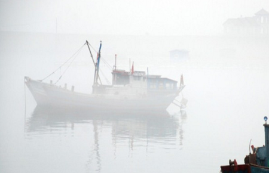

美人何处》书香之女》蔡文姬
蔡文姬
蔡文姬，名琰，字文姬，一字昭姬，陈留圉（今河南杞县）人，为蔡邕的女儿，博学有才，通音律，琴艺超人，是建安时期著名的女诗人。其父蔡邕是东汉末年的一个名士，早年因为得罪了宦官，被放逐到朔方（在今内蒙古杭锦旗北）去。董卓掌权的时候，蔡邕已回到洛阳。那时候，董卓正想笼络人心。他听到蔡邕名气大，就把他请来，封他做官，对他十分敬重，三天里连升三级。蔡邕觉得在董卓手下，比在汉灵帝手下的时候强多了。到了董卓被杀，蔡邕想起董卓待他不错，叹了一口气。这样一来惹恼了司徒王允，认为他是董卓一党的人，把他抓了起来。尽管朝廷里有许多大臣都替他说情，王允还是不同意，结果蔡邕死在了监狱里。幸福的童年至此结束。
一生三嫁：
蔡文姬第一次出嫁，远嫁河东卫家，她的丈夫卫仲道是大学出色的士子，可惜好景不长，不到一年，卫仲道便因咯血而死。两人无子女，蔡文姬遭到卫家嫌弃，认为她"克死丈夫"，当时正年少气盛、心高气傲的蔡文姬，哪里能受得了这种白眼，她不顾父亲的反对，愤而回家。
董卓死后，他的部将李傕等人又攻占长安，军阀混战的局面终于形成。羌胡番兵乘机掠掳中原一带，在“中土人脆弱、来兵皆胡羌，纵猎围城邑，所向悉破亡。马边悬男头，马后载妇女，长驱入朔漠，回路险且阻。”的状况下，蔡文姬与许多被掳来的妇女，一齐被带到南匈奴。
这心境是可以想象得到的，当初细君与解忧嫁给乌孙国王，王昭君嫁给呼韩邪，总算是风风光光的占尽了身份，但由于是远适异域，产生出无限的凄凉，何况蔡文姬还是被掳掠呢！饱受番兵的凌辱和鞭笞，一步一步走向渺茫不可知的未来，这年她二十三岁，这一去就是十二年。
在这十二年中，她嫁给了虎背熊腰的匈奴左贤王，饱尝了异族异乡异俗生活的痛苦。当然她也为左贤王生下两个儿子。她还学会了吹奏“胡笳”，学会了一些异族的语言。
在这十二年中，曹操也已经基本扫平北方群雄，把汉献帝由长安迎到许昌，后来又迁到洛阳。曹操当上丞相，挟天子以令诸侯。人一旦在能喘一口气的时候，就能想到过去的种种，尤其是在志得意满的时候，在这回忆中，想到少年时代的老师蔡邕对他的教导，当他得知蔡邕的女儿被掠到了南匈奴时，他立即派周近做使者，携带黄金千两，白壁一双，要把她赎回来。
蔡文姬多年被掳掠是痛苦的，现在一旦要结束十二年的羶肉酪浆生活，离开对自己恩爱有加的左贤王，和天真无邪的两个儿子，分不清是悲是喜，只觉得柔肠寸断，泪如雨下，在汉使的催促下，她在恍惚中登车而去，在车轮辚辚的转动中，十二年的生活，点点滴滴注入心头，从而留下了动人心魄的《胡笳十八拍》。
南匈奴人在蔡文姬去后，每于月明之夜卷芦叶而吹笳，发出哀怨的声音，模仿蔡文姬的“胡笳十八拍”，成为当地经久不衰的曲调。中原人士也以胡琴和筝来弹奏《胡笳十八拍》非常盛行，据传中原的这种风尚还是从她最后一个丈夫董祀开始的。
蔡女昔造胡笳声，一弹一十有八拍；
胡人落泪沾边草，汉使断肠对归客。
唐朝人李颀发出这样的感慨。
蔡文姬是悲苦的，“回归故土”与“母子团聚”都是美好的，人人应该享有的，在她却不能两全。
蔡文姬在周近的卫护下回到故乡陈留郡，但断壁残垣，已无栖身之所，在曹操的安排下，嫁给田校尉董祀，这年她三十五岁，公元208年，爆发了著名的“赤壁之战”。
文姬归汉： 曹操自从赤壁失败以来，经过几年整顿，重振军威，自封为魏公。公元216年，又晋爵为魏王（都城在邺城）。在北方他的威望很高，连南匈奴的呼厨泉单于也特地到邺城来拜贺。曹操把呼厨泉单于留在邺城，像贵宾一样招待他，让匈奴的右贤王回去替单于监理国家。
南匈奴跟汉朝的关系和好了。曹操就想起了他一位已经死去的朋友蔡邕（音yong ）有一个女儿还留在南匈奴，想把她接回来。
蔡邕的女儿名叫蔡琰（音yan)，字文姬，跟她父亲一样，是个博学多才的人。她父亲死后，关中地区又发生李傕、郭汜的混战，长安一带百姓到处逃难。蔡文姬也跟着难民到处流亡。那时候，匈奴兵趁火打劫，掳掠百姓。有一天，蔡文姬碰上匈奴兵，被他们抢走。匈奴兵见她年轻美貌，就把她献给了匈奴的左贤王。
打这以后，她就成了左贤王的夫人，左贤王很爱她。她在南匈奴一住就是十二年，虽然过惯了匈奴的生活，还是十分想念故国。
这一回，曹操想起了蔡文姬，就派使者带着礼物到南匈奴，把她接回来。
左贤王当然舍不得把蔡文姬放走，但是不敢违抗曹操的意志，只好让蔡文姬回去。蔡文姬能回到日夜想念的故国，当然十分愿意；但是要她离开在匈奴生下的子女，又觉得悲伤。在这种矛盾的心情下，她写下了著名诗歌《胡笳十八拍》。
蔡文姬到了邺城，曹操看她一个人孤苦伶仃，又把她再嫁给一个屯田都尉（官名）董祀。哪儿知道时隔不久，董祀犯了法，被曹操的手下人抓了去，判了死罪，眼看快要执行了。蔡文姬急得不得了，连忙跑到魏王府里去求情。正好曹操在举行宴会。朝廷里的一些公卿大臣、名流学士，都聚集在魏王府里。侍从把蔡文姬求见的情况报告曹操。曹操知道在座的大臣名士中不少人都跟蔡邕相识，就对大家说：“蔡邕的女儿在外流落了多年，这次回来了。今天让她来跟大家见见面，怎么样？”大伙儿当然都表示愿意相见。曹操就命令侍从把蔡文姬带进来。蔡文姬披散头发，赤着双脚，一进来就跪在曹操面前，替她丈夫请罪。她的嗓音清脆，话又说得十分伤心。座上有好些人原来是蔡邕的朋友，看到蔡文姬的伤心劲儿，不禁想起蔡邕，感动得连鼻子也酸了。曹操听完了她的申诉，说：“你说的情形的确值得同情，但是判罪的文书已经发出去了，有什么办法呢？”蔡文姬苦苦央告说：“大王马房里的马成千上万，手下的武士多得像树林，只要您派出一个武士，一匹快马，把文书追回，董祀就有救了。”曹操就亲自批了赦免令，派了一名骑兵追上去，宣布免了董祀的死罪。那时候，正是数九寒天。曹操见她穿得单薄，就送给她一顶头巾和一双鞋袜，叫她穿戴起来。曹操问她：“听说夫人家有不少书籍文稿，现在还保存着吗？” 蔡文姬感慨地说：“我父亲生前给我四千多卷书，但是经过大乱，散失得一卷都没留下来。不过我还能背出四百多篇。”曹操听她还能背出那么多，就说：“我想派十个人到夫人家，让他们把你背出来的文章记下，你看怎样？”蔡文姬说：“用不着。只要大王赏我一些纸笔，我回家就把它写下来。”
后来，蔡文姬果然把她记住的几百篇文章都默写下来，送给曹操。曹操看了，十分满意。曹操把蔡文姬接回来，在为保存古代文化方面做了一件好事。历史上把“文姬归汉”传为美谈。
所谓“蔡文姬受辱虏庭，诞育胡子，文辞有余，节烈不足，又另当别论。”者纯属一派胡言耳！彼时两汉魏晋时期人心向古，婚姻不需遵循匹夫三从四德之约束，更不能以节烈之名羁绊古人名节。所谓节烈之辞盖自宋明理学之兴始炽，束国人于一死巷，日趋裹足难有进展耳！此举于国于家，安有用乎？朱熹老儿仅于一家之言累国人千年名分，罪何其大矣；然至今尚有津津于其言而不自知者，行何其悲矣。
蔡文姬作品：
《悲愤诗》
汉季失权柄，董卓乱天常。志欲图篡弑，先害诸贤良。
逼迫迁旧邦，拥主以自强。海内兴义师，欲共讨不祥。
卓众来东下，金甲耀日光。平土人脆弱，来兵皆胡羌。
野围城邑，所向悉破亡。斩截无孑遗，尸骸相撑拒。
马边悬男头，马后载妇女。长驱西入关，迥路险且阻。
还顾邈冥冥，肝脾为烂腐。所略有万计，不得令屯聚。
或有骨肉俱，欲言不敢语。失意几微间，辄言弊降虏。
要当以亭刃，我曹不活汝。岂敢惜性命，不堪其詈骂。
或便加棰杖，毒痛参并下。旦则号泣行，夜则悲吟坐。
欲死不能得，欲生无一可。彼苍者何辜，乃遭此厄祸。
边荒与华异，人俗少义理。处所多霜雪，胡风春夏起。
翩翩吹我衣，肃肃入我耳。感时念父母，哀叹无穷已。
有客从外来，闻之常欢喜。迎问其消息，辄复非乡里。
邂逅徼时愿，骨肉来迎己。己得自解免，当复弃儿子。
天属缀人心，念别无会期。存亡永乖隔，不忍与之辞。
儿前抱我颈，问母欲何之。人言母当去，岂复有还时。
阿母常仁恻，今何更不慈。我尚未成人，奈何不顾思。
见此崩五内，恍惚生狂痴。号泣手抚摩，当发复回疑。
兼有同时辈，相送告离别。慕我独得归，哀叫声摧裂。
马为立踟蹰，车为不转辙。观者皆嘘唏，行路亦呜咽。
去去割情恋，遄征日遐迈。悠悠三千里，何时复交会。
念我出腹子，胸臆为摧败。既至家人尽，又复无中外。
城廓为山林，庭宇生荆艾。白骨不知谁，纵横莫覆盖。
出门无人声，豺狼号且吠。茕茕对孤景，怛咤糜肝肺。
登高远眺望，魂神忽飞逝。奄若寿命尽，旁人相宽大。
为复强视息，虽生何聊赖。托命于新人，竭心自勖励。
流离成鄙贱，常恐复捐废。人生几何时，怀忧终年岁。
美人何处》书香之女》李清照
李清照

李清照，宋代女词人。自号易安居士。济南章丘(今属山东)人。父格非，官至礼部员外郎、京东路提点刑狱。出自韩琦门下，又曾以文章受知于苏轼，学识渊博，尤用意于经学，在齐、鲁一带颇负盛名。后被罢官。平生著述较多，现仅存《洛阳名园记》一卷。母王氏，是状元王拱辰孙女（《宋史·李格非传》），一说为汉国公王准孙女（庄绰《鸡肋编》），也知书善文。
李清照一生经历可以宋室南迁为界，分作前后两个时期。
前期 李清照早年随父住在汴京、洛阳，受过较好的文化教养。她工书，能文，兼通音律，“自少年便有诗名，才力华赡，逼近前辈”(王灼《碧鸡漫志》)。在元符三年(1100)左右，写有《浯溪中兴颂诗和张文潜》，受到当时人们的好评。建中靖国元年(1101)18岁时，与吏部侍郎赵挺之幼子赵明诚结婚。明诚当时21岁，在太学当学生，喜好收蓄前代石刻。婚后不久，新党蔡京当政，赵挺之升任尚书右丞。他们极力打击旧党。李格非时为提点京东刑狱，竟因在党籍而被罢官。李清照当时曾献诗给赵挺之试图救援其父，诗中有“炙手可热心可寒”的话，可见在她婚后李家曾经遭到政治上的不幸，她对赵挺之的行事是有所不满的。
约在崇宁二年(1103)，赵明诚开始出仕，曾任鸿胪少卿。他们夫妻志同道合，“有饭蔬衣练，穷遐方绝域，尽天下古文奇字之志”（《金石录后序》）。经他们的搜求寻访，日积月累，其所藏蓄的亡诗逸史、古今名人书画和古器物，逐渐增多。大观元年(1107)，赵挺之死于京师，赵家随即也遭受了政治上的灾祸。当时蔡京为左仆射，由于忌恨赵挺之而对赵家进行诬陷。但因查无实据，所以只追夺了赵挺之的官职。赵明诚弟兄可能即因此而失官。李清照便和赵明诚回到了青州（今山东益都）赵氏的故里。
赵明诚屏居乡里的时间在10年以上。他们“虽处忧患困穷，而志不屈”，更加努力地访求古碑、文物。大约在宣和三年(1121)，赵明诚又重新出仕。先是出守莱州（今山东掖县）。任满后，改守淄州(今山东淄博市)，又授直秘阁。这一时期，他们开始编写《金石录》，并继续搜集古物、碑铭，一同鉴赏、考订，在学术上取得了很大的成绩。靖康元年，金人围攻汴京。次年，赵明诚母死于金陵，明诚携书15车南下奔丧。随之，北宋亡。高宗即位后，明诚起知建康府。这时北方大乱，赵家青州故第十余屋的书册什物被焚。李清照只携小部分文物随人群逃难，从此开始了她在南方的苦难生活。
后期 建炎二年(1128)，李清照怀著国破家亡之痛南逃至建康。她极关心国家命运和当时的政治形势，写有“南来尚怯吴江冷，北狩应知易水寒”，“南渡衣冠少王导，北来消息欠刘琨”的诗句，表达了对于南宋朝廷苟且偷安的极大不满。次年，赵明诚移知湖州（今属浙江），他驻家池阳（今安徽贵池），只身驰赴建康受命，不幸病倒。当清照从池阳乘舟赶到建康时，明诚已经病危，不久死去。她怀著极大的悲痛敛葬了丈夫。这时金兵又大举南侵，建康形势紧急，朝廷已开始疏散、逃亡。李清照派人先将书册、金石刻送往洪州（今江西南昌），准备去那里投奔赵明诚的妹丈以避乱。但洪州又失陷，道路不通。并且大部分文物又在战乱中散失。在赵明诚病重期间，他的朋友张飞卿曾携一玉壶来看望他。这件事竟被人传成是他们夫妻以玉壶颂金，并听说有人已向朝廷告发。这样的政治陷害使李清照大为惊恐，她决定将家中所有的铜器等物品进献朝廷，以求得洗刷和解脱。于是，她便追随著高宗逃难的路线辗转避乱，从越州到明州，经奉化、台州入海，又经温州返回越州。最后，在绍兴二年，又从越州移居杭州。这期间她不但承受著政治上的压力，而且大量书画、砚墨被盗，孤独一身，各地漂泊，境况极其悲惨。据《建炎以来系年要录》等资料记载，李清照曾经改嫁，但后来学者对此颇有争议。
这一年冬，金人南犯，她又自临安避乱金华，次年才返回临安。关于李清照晚年的生活情况缺乏资料记载，但她曾写诗送韩肖胄、胡松年使金，曾作《打马图经》及“自序”，还曾携前人墨迹访米友仁求题跋。这说明她一直在关心国家大事，并且一直在从事文学创作和学术活动。
李清照作品:
《点绛唇》一：
寂寞深闺，柔肠一寸愁千缕。惜春春去，几点催花雨。
倚遍阑干，只是无情绪！人何处？连天衰草，望断归来路。
《点绛唇》二：
蹴罢秋千，起来慵整纤纤手。露浓花瘦，薄汗轻衣透。
见客入来，袜刬金钗溜，和羞走。倚门回首，却把青梅嗅。
《浣溪沙》一：
小院闲窗春己深，重帘未卷影沈沈，倚楼无语理瑶琴。
远岫出山催薄暮，细风吹雨弄轻阴，梨花欲谢恐难禁。
《浣溪沙》二：
绣幕芙蓉一笑开，斜偎宝鸭亲香腮，眼波才动被人猜。
一面风情深有韵，半笺娇恨寄幽怀，月移花影约重来。
《念奴娇 春情》
萧条庭院，又斜风细雨，重门须闭。宠柳娇花寒食近，种种恼人天气。
险韵诗成，扶头酒醒，别是闲滋味。征鸿过尽，万千心事难寄。
楼上几日春寒，帘垂四面，玉栏干慵倚。被冷香消新梦觉，不许愁人不起。
清露晨流，新桐初引，多少游春意！日高烟敛，更看今日晴未？
美人何处》书香之女》上官婉儿
上官婉儿
上官婉儿又称上官昭容，唐代女官、诗人、皇妃。陕州陕县（今属河南三门峡）人，上官仪孙女，上官仪获罪被杀后随母郑氏配入内庭为婢。十四岁时因聪慧善文为武则天重用，掌管宫中制诰多年，有“巾帼宰相”之名。唐中宗时，封为昭容，权势更盛，在政坛、文坛有着显要地位，从此以皇妃的身份掌管内廷与外朝的政令文告。曾建议扩大书馆，增设学士，在此期间主持风雅，代朝廷品评天下诗文，一时词臣多集其门，《全唐诗》收其遗诗三十二首。710年，临淄王（即唐玄宗）起兵发动唐隆政变，与韦后同时被杀。
陕州陕县人，唐高宗时宰相上官仪孙女，曾祖父上官弘曾在隋朝时任江都宫福监。
麟德元年（664），上官仪因替高宗起草将废武则天的诏书，被武后所杀，刚刚出生的上官婉儿与母亲郑氏同被配没掖廷。在掖廷为奴期间，在其母的精心培养下，上官婉儿熟读诗书，不仅能吟诗着文，而且明达吏事，聪敏异常。
仪凤二年（677），上官婉儿曾被武则天召见宫中，当场命题，让其依题着文。上官婉儿文不加点，须臾而成，且文意通畅，词藻华丽，语言优美，真好像是夙构而成。武则天看后大悦，当即下令免其奴婢身分，让其掌管宫中诏命。不久，上官婉儿又因违忤旨意，罪犯死刑，但武则天惜其文才而特予赦免，只是处以黥面而已。以后，上官婉儿遂精心伺奉，曲意迎合，更得武则天欢心。从通天元年（696）（出自《景龙文馆记》，《旧唐书》为圣历年）开始，又让其处理百司奏表，参决政务，权势日盛。
神龙元年（705），唐中宗复位以后，又令上官婉儿专掌起草诏令，深被信任，又拜为昭容，封其母郑氏为沛国夫人。二年，武三思依靠韦后和安乐公主等人的支持，相继设计贬杀了张柬之、桓彦范、敬晖、袁恕己和崔玄暐等五王，权倾人主，不可一世。上官婉儿又与其私通，并在所草诏令中，经常推崇武氏而排抑皇家，致使太子李重俊气愤不已。
景龙元年（707）七月，李重俊与左羽林大将军李多祚等，矫诏发羽林军三百余人，杀武三思、武崇训于其府第，并诛其亲党十余人，又引兵从肃章门斩关而入，叩击阁门而搜捕上官婉儿。上官婉儿急忙逃至唐中宗和韦后处，并扬言说：“观太子之意，是先杀上官婉儿，然后再依次捕弑皇后和陛下。”韦后和中宗一时大怒，遂带着上官婉儿和安乐公主登上玄武门躲避兵锋，令右羽林大将军刘景仁率飞骑二千余人，屯太极殿前，闭门自守。太子兵败被杀。
此后，上官婉儿又经常劝说中宗，大量设置昭文馆学士，广召当朝词学之臣，多次赐宴游乐，赋诗唱和。上官婉儿每次都同时代替中宗、韦后和安乐公主，数首并作，诗句优美，时人大多传诵唱和。对大臣所作之诗，中宗又令上官婉儿进行评定，名列第一者，常赏赐金爵，贵重无比。因此，朝廷内外，吟诗作赋，靡然成风。中宗派人又在上官婉儿居地穿池筑岩，穷极雕饰，常引大臣宴乐其中。当时，宫禁宽疏，允许宫内官员任意出入。上官婉儿遂与一些宫官在宫外购筑宅第，经常与他们交接往来，有的人因此而求得高官要职。中书侍郎崔湜就是因为与上官婉儿在外宅私通，后被引以为相的。不久，崔湜又在主持铨选时，多有违失，被御史李尚隐弹劾，以罪被贬外州司马；也因上官婉儿和安乐公主为其申理，仍官复原职。
景龙四年（710），太平公主势力日盛，上官婉儿又依附太平公主。六月，唐中宗被韦后与安乐公主毒死后，上官婉儿与太平公主一起草拟遗诏，立温王李重茂为皇太子，韦后知政事，相王李旦参决政务。七月，临淄王李隆基率羽林将士冲入宫中，杀韦后及其党羽。上官婉儿执烛率宫人迎接，并把她与太平公主所拟遗诏拿给刘幽求观看，刘幽求拿着遗诏在李隆基处为其说项，但李隆基不许，杀上官婉儿于旗下。开元初年，唐玄宗派人将上官婉儿的诗作收集起来，编成文集二十卷，令张说作序。此集今佚，《全唐诗》仅收其遗诗三十二首。
虽然上官婉儿凭借她的聪明才智，周旋在武、韦、李等各大政治势力之间，并借此掌握国家大权，但她毕竟只是一个小小的昭容，没有自己的势力，朝堂上的风起云涌也让她疲于应付。
710年5月，中宗突然死亡，这让上官婉儿感到了危机。韦后意欲独掌大权，让婉儿起草一份遗诏，第一，让十六岁的李重茂接班当皇帝；第二，让韦皇后辅政，就像当年的武则天一样，裁决军国大事。但婉儿并不认为韦后有足够的能力掌控大局，李唐皇族的力量依然相当强大，李重俊的政变已经给了她足够的警示。于是婉儿联络了太平公主，此时的太平公主在朝堂中已是举足轻重，她也乐意与婉儿合作，于是二人连夜起草好了一份遗诏。
遗诏重点内容一共三条。第一条：立温王重茂为皇太子；第二条：韦皇后知政事；第三条：相王李旦参谋政事。然而韦后并不满意，她准备效仿武则天当皇帝，将台阁政职、内外兵马大权以及中央禁军等全部安排了自己的党羽和族人，这无疑令李唐皇室感受了巨大的危机，太平公主与临淄王李隆基决定先下手为强。7月21日，李隆基引兵杀入内宫，声称“韦氏毒死先帝，谋危社稷，今夕当共诛诸韦”，大部羽林军临阵倒戈，韦氏一党来不及反应，尽数被杀，史称“唐隆政变”。而与韦后关系过密的上官婉儿也在诛杀之列，婉儿执烛率宫人迎接，并把她与太平公主所拟遗诏拿给刘幽求观看，以证明自己是和李唐宗室站在一起的，刘幽求拿着遗诏求李隆基开恩，但李隆基深知其左右摇摆，此时若放过，定后悔无及，遂斩于旗下。
其实上官婉儿在政变中计划十分周密，她早早就联络了太平公主。然而她没有算到引兵攻入宫中是英武果敢的李隆基，李隆基虽与太平公主一起对付韦后，但二人实则各怀心事。此外，婉儿一次又一次地在政治斗争中左右逢源，固然说明她心思的聪明，但也暴露了她政治道德的弱点，她是一个没有任何政治节操和政治立场的人。
所以，在这次政变中婉儿聪明反被聪明误，她手中的遗诏非但没有成为救命稻草，反倒成了刺向她自己的一把利剑。
上官婉儿作品:
《彩书怨》
叶下洞庭初，思君万里余。露浓香被冷，月落锦屏虚。
欲奏江南曲，贪封蓟北书。书中无别意，惟怅久离居。
美人何处》书香之女》卓文君
卓文君
卓文君，汉代才女，西汉临邛（属今四川邛崃）人，大富商卓王孙的女儿。容貌秀丽，喜欢音乐；十七岁而寡。与汉代著名文人司马相如的一段爱情佳话至今还被人津津乐道。她也有不少佳作流传后世。以“愿得一心人白首不相离”为著名。
司马相如，字长卿，是蜀郡成都人，好读书，善弹琴，风流洒脱，文章写得很漂亮，特别擅长写赋。他与王吉是好朋友，王吉曾对他说：“你在外面游学，如果官运不好，日子不好过，就到临邛找我。”有一天，司马相如真的来投奔了王吉。
两人携手来到客厅，司马相如向王吉谈了近几年的行踪，王吉知道了相如尚未成家，便向他说起，临邛首富卓王孙有个女儿卓文君，生得聪明无比，美貌无双，如今在娘家守寡。与相如是天生的一双。司马相如听了，不好意思地摇了摇头。王吉却不以为然，他认为事在人为。
卓王孙知道司马相如是有名的文人，便宴请了他，并顺便发了一百多张请帖，邀请了很多县中的官员与有名望的人。
宴会开始，卓王孙带领众宾客向司马相如敬酒，少不了说了许多奉承话。正在大家喝得高兴的时候，王吉向大家介绍说：“相如先生是当今第一名流，不仅文章写得好，而且琴也弹得很好。今天有佳宾美酒，何不请相如先生弹奏一曲呢？”众人听了，齐声叫好。
司马相如推辞了一番，便弹奏起来，先弹了一支短曲，后来偷看到竹帘后面有一个影影绰绰穿白衣服的女子在听琴，知道是卓文君，就施展自己高超的琴技，弹起了一曲凤求凰，通过琴声，向卓文君表达了自己求爱的心情。原来，卓文君听说司马相如来做客，早就想见识一下这位大才子。她本来就喜爱音乐，听到琴声，就偷偷地躲在帘子后面看。卓文君深懂琴理，听出了琴声中的意思。而宴席上的宾客，当然听不出个所以然来，只是为了恭维司马相如，一味地拍手叫好。
司马相如回去以后，就用钱买通了卓文君的仆人，通过仆人送给卓文君一封求爱信。卓文君接到求爱信激动不已，但她知道父亲不会同意这门亲事。便在一天晚上，偷偷地跑出来，投奔了司马相如。俩人连夜乘车回到司马相如的家乡成都。 卓文君同司马相如来到成都，开始时，倒安于清贫生活，可是日子长了，就忍耐不住了，便劝相如到临邛去。司马相如也没有别的办法两人就一同来到了临邛。
卓王孙对卓文君私奔十分恼火，不肯周济他们。为了出卓王孙的丑，他们便开起了一个夫妻酒店，文君当垆卖酒，相如故意当众洗涤碗筷杯盘，提壶送酒，像个酒保。
果然，卓王孙认为卓文君与司马相如这样做太丢面子，羞得连大门也不敢出。后来在亲戚朋友和县令的劝说下，送给了司马相如他们一笔财物。司马相如同卓文君又回到了成都，开始过起了富裕的生活。
卓文君：事见《孤本元明杂剧·私奔相如》，清袁于令《肃霜裘》传奇。汉时，司马相如不得志时，在临邛富户卓王孙家操琴。才貌双全的卓女文君17岁新寡，司马相如仰慕文君，借琴音倾诉心曲，二人订盟，因卓王孙不允，文君遂偕相如私逃，返回家乡当垆卖酒。后来相如献《子虚赋》，汉武帝拜为中郎将，卓王孙献金相认。
卓文君生在汉代这种大而化之的年代，又生在一个四川临邛巨贾之家，金山银山地养着。她长得眉如远山，面若芙蓉，通晓琴棋书画，十七岁出嫁，半年后便因丈夫去世返回娘家。这时候，一个贫穷的小子做客卓家，用那把著名的“绿绮琴”弹唱那首著名的《凤求凰》，把这个十七岁的小寡妇内心撩拨起来，半夜三更就夜奔他去了，第二天索性双双跑到这个穷小子的成都老家。当然，我们都知道这个穷小子就是西汉有名的才子司马相如。可是那时的卓文君还不知道啊，她只顾得上收拾司马相如那个家徒四壁的烂摊子了。
司马相如豪情不减地典衣沽酒，今朝有酒今朝醉；卓文君也荆钗布裙，风风火火开始新生活。几个月后，他们干脆卖掉车马，回到临邛开了一间小酒家，卓文君淡妆素抹，当垆沽酒，司马相如更是穿上犊盘鼻裤，与酒保佣人一起洗盘子，忙里忙外地跑堂。
卓文君是一个罕见的女人，居然不慕虚荣，司马相如也是一个罕见的文人，居然一点都不自卑一点都不羞愧。这对才子佳人开的小酒店远近闻名，门庭若市，逼得卓王孙不得不分给他们童仆百人，钱百万缗，并厚备妆奁，接纳了这位把生米已经煮成熟饭的女婿。从此这对小夫妻又过上了整天饮酒作赋，鼓琴弹筝的悠闲生活。
这时，司马相如写下的《子虚赋》、《上林赋》，才华四溅，好大喜功的皇帝惊为天人，拜司马相如为郎官，后来又再拜为中郎将。司马相如衣锦荣归，着实让岳父卓王孙风光了一把。
中国的古典文学永远都是“私订终身后花园，落难公子中状元”，看来这个恶俗的传统是以卓文君和司马相如为蓝本的。说着“慧眼识英才”的爱情佳话，其实一看就知道是涎着脸的政治投资。看看诸多戏文，女人舍身割肉地供养着男人读书，哪里是追求爱情，倒像是伯乐当了裤子去赌马。既然是赌，肯定有输有赢，《琵琶记》、《西厢记》里赵五娘、崔莺莺赢了，终于赢得她们的丈夫，秦香莲输了，让天谴劈死了她那负心的状元郎……但，不管结果如何，被动地承受了许多无中生有的苦难，总是有点怆然的吧？
中国传统道德向来有一种“目标正确论”，常常为了名分而放弃现实生活。所以对古代历史上的苦女人我一般很难同情。以前的人就是活得太认真太累了，不知道好玩才是生活的要义。
从来未见记载卓文君对丈夫功名的渴求，倒是看出她非常会享受和司马相如在一起的不同生活形态。在司马相如年逾知命的时候，这个凡人想娶妾了，卓文君忍无可忍，作了一首《白头吟》，说道：“皑如山上雪，皎若云间月。闻君有两意，故来相决绝。今日斗酒会，明旦沟水头。躞蹀御沟止，沟水东西流。凄凄复凄凄，嫁娶不须啼。愿得一人心，白头不相离。竹竿何袅袅，鱼尾何徒徒。男儿重意气，何用钱刀为。”让司马相如回心转意了，两人白首偕老，安居林泉。
窦太后崇尚“黄老”学说，罢免了支持儒家学说的窦婴和田羛的官职，陆续任命了几个浑浑噩噩的人当了丞相、御史大夫和郎中令。武帝不愿与他们议事，呆在宫里实在无趣，就经常换上便装，外出游玩打猎，有时跑得很远，一连四五天不回来。后来，他觉得跑得太远，不仅危险，也实在辛苦，就命光禄大夫吾丘寿王拓造大型苑囿上林苑。年轻的武帝便把大部分时间消磨在上林苑中。
汉武帝雅好文学喜欢辞赋，东方朔、吾丘寿王等著名的文人，便经常陪伴在他的身旁，吟诗作赋，倒也十分快活。
一天，汉武帝读到司马相如的《子虚赋》，被赋中华美的文辞与磅礴的气势所吸引，不由拍手叫好。他一口气读完《子虚赋》，以为作者是前朝人，便连声叹息说：“写这篇赋的人，真是个才子，可惜我没有和这个人生活在同一个时代。”
这时，在汉武帝身边服侍的狗监（替汉武帝管理猎狗的人）杨得意谄笑着说：“陛下，写这篇赋的人小臣知道，他是小臣的同乡司马相如，现在成都闲居。”
汉武帝听了又惊又喜，问道：“你说的可是真实情况吗？"杨得意回答说：“是的，司马相如曾经对我说过，是他写的《子虚赋》。”
“太好了!这么一个有才华的人，竟没有人对我说过。”汉武帝有点惋惜地说，于是，他马上派人召司马相如来京。
且说司马相如被召到朝廷，汉武帝接见了他，问他道：“《子虚赋》是你写的吗？”
司马相如非常自负地回答说：“是的，陛下，《子虚赋》正是臣写的。不过，那是写诸侯的事，并没有什么了不起。若准臣陪陛下游猎，臣可写出天子游猎赋献给陛下。”
汉武帝听了非常高兴。为司马相如安排了豪华的住处，给以优厚的待遇。第二天就带了司马相如等人去上林游猎。没过几天，司马相如就挥洒大笔，写出了一篇《上林赋》，呈献给汉武帝。汉武帝读了《上林赋》，感到十分满意，心中高兴，就封了司马相如一个郎官（帝王的侍从官）。
后来，司马相如曾经作为汉武帝的专使招抚了夜郎归顺汉朝，很得武帝的赏识。邛、鮈、冉、鮉一带地区各族首领见夜郎归顺了汉朝，也表示愿意归顺汉朝。于是汉武帝就封司马相如为中郎将，手持皇帝的旄节，去招抚这些地区的部族。司马相如顺利地完成了使命，汉武帝十分满意，重赏了他。不久，有人上书给汉武帝，说司马相如出使时曾接受了很多金钱贿赂，武帝信以为真，就罢免了司马相如的官职。
自古至今，大多数男人总是令人失望。司马相如自然也不例外。 当他在事业上略显锋芒，终于被举荐做官后，久居京城，赏尽风尘美女，加上官场得意，竟然产生了弃妻纳妾之意。曾经患难与共，情深意笃的日子此刻早已忘却。哪里还记得千里之外还有一位日夜倍思丈夫的妻子。文君独守空房，日复一日年复一年地过着寂寞的生活。一首《白头吟》，“……闻君有两意，故来相决绝。愿得一心人，白首不相离。……”表达了她对爱情的执着和向往以及一个女子独特的坚定和坚韧。也为她们的故事增添了几分美丽的哀伤。
终于某日，司马相如给妻子送出了一封十三字的信：一二三四五六七八九十百千万。聪明的卓文君读后，泪流满面。一行数字中唯独少了一个“亿”，无亿？岂不是夫君在暗示自己已没有以往过去的回忆了。她，心凉如水。怀着十分悲痛的心情，回了一封《怨郎诗》。
其诗曰：一别之后，二地相思，只道是三四月，又谁知五六年。七弦琴无心弹，八行书无可传，九曲连环从中折断，十里长亭望眼欲穿。百思想，千系念，万般无奈把君怨。万语千言说不完，百无聊赖十倚栏。重九登高看孤雁，八月中秋月圆人不圆。七月半，秉烛烧香问苍天。六月伏天人人摇扇我心寒。五月石榴似火红，偏遭阵阵冷雨浇花端。四月枇杷未黄，我欲对镜心意乱。急匆匆，三月桃花随水转；飘零零，二月风筝线儿断。噫，郎呀郎，恨不得下一世，你为女来我做男。
司马相如看完妻子的信，不禁惊叹妻子之才华横溢。遥想昔日夫妻恩爱之情，羞愧万分，从此不再提遗妻纳妾之事。这首诗也便成了卓文君一生的代表作数字诗。细细品读，其爱恨交织之情跃然纸上。
卓文君是聪明的。她用自己的智慧挽回了丈夫的背弃。她用心经营着自己的爱情和婚姻，终于苦尽甘来。他们之间最终没有背弃最初的爱恋和最后的坚守。这也使得他们的故事千转百回，成为世俗之上的爱情佳话。
卓文君，一个有思想，有勇气，敢爱敢恨的才女。她的一生，应该是值得的。比如充满浪漫色彩的夜奔，比如可遇而不可求的一见钟情，比如与爱的人携手终老等等。女人一生如此，夫复何求？后来人们根据这个事还有一首诗：《望江亭》
当垆卓女艳如花，不记琴心未有涯。
负却今宵花底约，卿须怜我尚无家。
句首四字连起来为：“当不负卿”
卓文君作品：
《凤求凰》
凤兮凤兮归故乡，游遨四海求其凰。
有艳淑女在此房，何缘交接为鸳鸯？
凤兮凤兮从我栖，得托孽尾永为妃。
交情通体心和谐，中夜相从知者谁？
《白头吟》
皑如山上雪，皎若云间月。闻君有两意，故来相决绝。
今日斗酒会，明旦沟水头；躞蹀御沟上，沟水东西流。
凄凄复凄凄，嫁娶不须啼；愿得一心人，白头不相离。
竹竿何袅袅，鱼尾何蓰蓰。男儿重意气，何用钱刀为！
美人何处》书香之女》班昭
班昭
班昭（约45年？－约117年？），一名姬，字惠班。汉族，扶风安陵（今陕西咸阳东北）人。东汉史学家，史学家班彪女、班固与班超之妹，博学高才，嫁同郡曹寿，早寡。兄班固著《汉书》，八表及《天文志》遗稿散乱，未竟而卒，班昭继承遗志，独立完成了第七表〈百官公卿表〉与第六志〈天文志〉，《汉书》遂成。帝数召入宫，令皇后贵人师事之，号曹大家（gū）。善赋颂，作《东征赋》、《女诫》。班昭为中国第一个女历史学家。
班昭家学渊源，尤擅文采。班昭本人常被召入皇宫，教授皇后及诸贵人诵读经史，宫中尊之为师。清代女作家赵傅“东观续史，赋颂并娴”。班昭十四岁嫁给同郡曹世叔为妻，所以人们又把班昭叫做“曹大家”。以个性而论，曹世叔活泼外向，班昭则温柔细腻，夫妻两人颇能相互迁就，生活得十分美满。
班昭的文采首先就表现在帮她的哥哥班固修《汉书》，这部书是我国的第一部纪传体断代史，是正史中写的较好的一部，人们称赞它言赅事备，与《史记》齐名，全书分纪、传、表、志几类。还在班昭的父亲班彪的时候，就开始了这部书的写作工作，她的父亲死后，她的哥哥班固继续完成这一工作。班固，字孟坚，九岁能作文，稍大一点，博览众书，九流百家之言无不穷究，不料就在他快要完成《汉书》时，却因窦宪一案的牵连，死在狱中，班昭痛定思痛，接过亡兄的工作继续前进。
好在班昭还在班固活着的时候就参与了全书的纂写工作，后来又得到汉和帝的恩准，可以到东观藏书阁参考典籍，所以写起来得心应手。班昭在四十岁的时候，终于完成了《汉书》。
班昭主要生活在汉和帝时代，汉和帝在班超死后不久就驾崩了，皇子刘隆生下来才一百天，就嗣位为汉殇帝，邓太后临朝听政，不到半年，殇帝又死，于是以清河王刘祜嗣位为汉安帝，安帝才十三岁，邓太后仍然临朝听政。
东汉皇帝短命，只有开国的光武帝刘秀活过“花甲”，六十二岁时死，其次是汉献帝刘协五十三岁，再次是汉明帝四十七岁，其他多在二十岁以下，包括一大批娃娃皇帝，造成外戚专权局面。
邓太后以女主执政，班昭以师傅之尊得以参予机要，竭尽心智地尽忠。邓骘以大将军辅理军国，是太后的兄长，颇受倚重，后来母亲过世，上书乞归守制，太后犹豫不决，问策于班昭，班昭认为：“大将军功成身退，此正其时；不然边祸再起，若稍有差迟，累世英名，岂不尽付流水？”邓太后认为言之有理，批准了邓骘的请求。
班昭年逾古稀而逝，皇太后为她素服举哀。 班昭是一位博学多才，品德俱优的中国古代女性，她是位史学家，也是位文学家，还是位政治家。她在曹家有一个儿子，几个女儿，她儿子叫曹成，字子谷。邓太后临朝称制后，班昭开始参与政事，出的力不少。因为这个原因，曹成被封为关内侯，官至齐相。班昭逝世后，皇太后亲自为多年的老师素服举哀，由使者监护丧事，死后也给予她应得的荣誉。
金星上的班昭陨石坑是以她的名字命名的。
美人何处》秦淮八艳》柳如是
柳如是
秦淮柳隐的傲骨与风情 此去柳花如梦，英雄美人的时代已成为茶余闲话，然而此情不悔、不改、不尽，任这百年悠悠历史的褒贬洗礼，她依然如一个时代的样本，依然是那秦淮河畔永不衰败的桃花美人，一步一挪，尽是风情。
柳如是，明末才女，秦淮八艳之首。生于1618年，原名杨爱，小字影怜，蘼芜君，后据唐朝韩翊《章台柳》:"章台柳,章台柳,昔日青青今在否?纵使长条似旧垂,也应攀折他人手."诗意，哀叹命运的凄凉和对自己的不公,改姓柳，取《金刚经》首句“如是我闻”，改名如是，号我闻居士，又号河东君。
柳如是初为吴江名妓，姿容出众，艺压群芳，工诗善画，与李待问、宋征舆、陈子龙等都有过一段情。其中与陈子龙的一段情愫，双方情切意笃，长居松江南楼，赋诗作对，互相唱和。可惜南楼唱和的美景不长，陈子龙元配张氏带人闹上南楼。柳如是不甘受辱，悲切而毅然地离去。
二十岁的柳如是结识了“学贯天人”“当代文章伯”之称的明朝大才子钱谦益。后来柳如是以男妆相，柳儒士之名与其相知，带着柳如是徜徉于湖光山水，诗酒作伴，才文相得。柳如是感其深情，愿嫁此时早已年过半百的钱谦益为侧室。钱谦益娶柳如是后，为她在虞山盖了壮观华丽的“绛云楼”和“红豆馆”，金屋藏娇。两人同居绛云楼，读书论诗相对甚欢。钱谦益戏称柳如是"柳儒士"。柳如是后生有一女。
当崇祯帝自缢，清军占领北京后，南京建成了弘光小朝廷，柳如是是支持钱谦益当了南明的礼部尚书。不久清军南下，当兵临城下时，柳如是劝钱谦益与其一起投水殉国，钱谦益沉思无语，最后走下水池试了一下水，说：“水太冷，不能下”，柳如是“奋身欲沉池水中”，却给钱谦益硬托住了。于是钱谦益便腼颜迎降了。
钱谦益降清去北京，柳如是留在南京不去。钱谦益做了清朝的礼部侍郎兼翰林学士，由于受柳如是影响，半年后便称病辞归。
顺治四年，钱谦益因黄毓祺反清案被捕入狱，顺治五年，柳如是四处奔走，救出了钱谦益。
柳如是在病中代他贿赂营救出狱，并鼓励他与尚在抵抗的郑成功、张煌言、瞿式耜、魏耕等联系。柳如是并尽全力资助，慰劳抗清义军，这些都表现出她强烈的爱国民族气节。钱谦益降清，本应为后世所诟病，但赖有柳如是的义行，而冲淡了人们对他的反感。
康熙三年（1664年）五月二十四日，钱谦益去世。钱谦益去世后，乡里族人聚众欲夺其房产，柳如是为了保护钱谦益家产业，竟用缕帛结项自尽。恶棍们虽被吓走，一代才女却这样结束了一生。享年四十六岁。柳如是死后葬于虞山佛水山庄。是年其女年17岁，已嫁给无锡赵玉森编修之子。
柳如是 诗词：
上阙：悲落叶，重叠复相失。
相失有时尽，连翩去不息。
鞴歌桂树徒盛时，乱条一去谁能知。
谁能知，复谁惜。
昔时荣盛临春风，今日煞黄委秋日。
凌春风，委秋日。
朝花夕蕊不相识。
下阙：悲落叶，落叶难飞扬。
短枝亦已折，高枝不复将。
愿得针与丝，一针一丝引意长。
针与丝亦可量。
不畏根平谢，所畏秋风寒。
秋风催人颜，落叶催人肝。
眷言彼妹子，落叶诚难看。
人物传记：
1. 史学大师陈寅恪怜之，以古稀之年、失明膑足之身，撰出《柳如是别传》，耗时10年，卷终而逝。
2.《美丽与哀愁-一个真实的柳如是》为“美丽与哀愁”系列丛书之一，将向大家呈现一个真实的柳如是。
美人何处》秦淮八艳》陈圆圆
陈圆圆
陈圆圆，字畹芬，原姓邢名沅，出生于（1623）常州武进，是秦淮八艳之一，一代名妓。后为明末山海关名将吴三桂妾，最终被李自成手下刘宗敏掳走成为其妻。
陈圆圆父亲名邢三，母亲早亡，从姨父姓陈。圆圆，倾国倾城，能歌善舞，色艺冠时，时称“秦淮八艳”之一。崇祯时外戚周奎欲给皇帝寻求美女，以解上忧，遂派遣田贵妃的父亲田戚畹下江南选美。后来田畹将名妓陈圆圆、杨宛、顾秦等献给崇祯皇帝。
其时战乱频仍，崇祯无心逸乐。陈圆圆又回到田府，田戚畹占为私有。一日吴三桂在田府遇见陈圆圆，一见倾心，后吴三桂纳圆圆为妾。据说李自成攻破北京，手下刘宗敏掳走陈圆圆，吴三桂“冲冠一怒为红颜”，遂引清军入关，攻破李自成，但陈圆圆却下落成谜。一说吴三桂为平西王，圆圆随往，以女道士卒于云南。也有考证当时陈圆圆已经离开北京。有考证，陈圆圆最后死于贵州省马家寨。
一个青楼的女子，能够导致一个王朝的覆灭。一个明末最有权势的男人，为何因为她陷入战争？了解历史的人都知道，明朝末年吴三桂引清兵入关，最终导致了大明王朝的灭亡。但是据说吴三桂这么做是为了一个女人的缘故。这个女人就是明末名妓陈圆圆。
据说，改变陈圆圆的第一个命运是明朝的末代王迪崇祯。当时的大明王朝内忧外患。崇祯皇帝是一个不太有能力的人，整天茶不思饭不想哀声叹气。后宫有一个田贵妃看到后，就想要讨好一下皇帝，于是就让自己的父亲田畹去找一个美女。
田畹来到江南，花了20万两的银子买了陈圆圆，并且把陈圆圆送到了宫里。没到到崇祯还是整天地唉声叹气，对陈圆圆这样的美女根本提不起任何兴趣，陈圆圆又从宫里被退回到田府，继续做歌舞伎。就在这个时间段，改变陈圆圆命运的第二个男人出现了。
国难当头，吴三桂任命为总兵，镇守明朝的北大门山海关。而吴三桂的父亲也被提拔我镇守北京的提督，一时间吴家父子兵权在握，成了京城里最热门的人物。田畹盛邀吴三桂赴其家宴，“出群姬调丝竹，皆殊秀。一淡妆者，统诸美而先众音，情艳意娇。”而这位淡妆丽质的歌姬，就是陈圆圆。吴三桂惊诧于陈圆圆的美艳，“不觉其神移心荡也”(陆次云《圆圆传》)。田弘遇遂因三桂之请，将圆圆赠送吴三桂，并置办丰厚的妆奁，送至吴府。
李自成打进北京后，吴三桂的父亲投降了起义军，陈圆圆被李之部下所掠。当吴三桂答应投降李自成时，闻圆圆已被李之部将所占，冲冠大怒，高叫“大丈夫不能自保其室何生为？”遂投降了清军与农民军开战。这就是吴梅村在《圆圆曲》中所曰：“恸哭六军俱缟素，冲冠一怒为红颜”。
自成战败后，将吴三桂之父及家中38口全部杀死，然后弃京出走。吴三桂抱着杀父夺妻之仇，昼夜追杀农民军到山西。此时吴的部将在京城搜寻到苏州名姬陈圆圆，飞骑传送，自引吴三桂带着陈圆圆由秦入蜀，然后独占云南。
顺治中，吴氏进爵云南王，欲将圆圆立为正妃，圆圆托故辞退，吴三桂别娶。不想所娶正妃悍妒，对吴的爱姬多加陷害冤杀，圆圆遂独居别院。圆圆失宠后对吴渐渐离心。
康熙12年，清廷撤藩，吴三桂兴兵造反，自称为“天下都招讨兵马大元帅”。对此，圆圆是不赞成的，她对吴说：“人生在世，不过数址年，何必称王称霸，争城夺地，涂炭生灵?我为王爷着想，不若卸兵权，做个范蠡大夫，泛舟五湖，怎不快活?”吴说：“这是妇人之见。”圆圆知道已无可挽回，便说：”我侍候大王已有二三十年，时间不能算不久，长此奢华，恐遭天忌，请允许我削发为尼吧。”圆圆遂乞削发为尼，从此在五华山华国寺长斋绣佛。
康熙28年（1695），陈圆圆在庵内一病身逝，被葬于商山寺旁。墓联曰：“尘劫中不昧本来，朗月仍辉性海；迷障里能开觉悟，净莲更邮污泥。”横匾为“圆光寂照”四字。
陈圆圆 诗词
吴梅村《圆圆曲》
鼎湖当日弃人间， 破敌收京下玉关，痛哭六军俱缟素， 冲冠一怒为红颜！
红颜流落非我恋， 逆贼天亡自荒宴；电扫黄巾下黑山， 哭罢君亲再相见！
相见初惊田窦家， 侯门歌舞出如花。许将戚里箜篌伎， 等取将军油壁车。
家本姑苏浣花里， 圆圆小字娇罗绮。梦向夫差苑里游， 宫娥拥入君王起。
前身合是采莲人， 门前一片横塘水。横塘双浆去如飞， 何处豪家强载归。
此际岂知非薄命， 此时只有泪沾衣。熏天意气连宫掖， 明眸皓齿无人惜。
夺归永巷闭良家， 教就新声倾座客。座客飞觞红日暮， 一曲哀弦向谁诉？
白皙通侯最少年， 捡取花枝屡回顾。早携娇鸟出樊笼， 待得银河几时渡？
恨杀军书抵死催， 苦留后约将人误！相约恩深相见难， 一朝蚁贼满长安。
可怜思妇楼头柳， 认作天边粉絮看！遍索绿珠围内第， 强呼绛树出雕阑。
若非壮士全师胜， 争得蛾眉匹马还？蛾眉马上传呼进， 云鬟不整惊魂定。
蜡炬迎来在战场， 啼妆满面残红印！专征箫鼓向秦川， 金牛道上车千乘。
斜谷云深起画楼， 散关月落开妆镜。传来消息满江乡， 乌粕红经十度霜。
教曲技师怜尚在， 浣纱女伴忆同行。旧巢合是衔泥燕， 飞上枝头变凤凰。
长向樽前悲老大， 有人夫婿擅侯王。当时只受声名累， 贵戚名豪竞延致。
一斛明珠万斛愁， 关山漂泊腰肢细！错怨狂风扬落花， 无边春色来天地。
尝闻倾国与倾城， 翻使周郎受重名。妻子岂应关大计？ 英雄无奈是多情！
全家白骨成灰土， 一代红妆照汗青！君不见馆娃宫起鸳鸯宿，越女如花看不足。
香径尘生鸟自啼， 屉廊人去苔空绿！换羽移宫万里愁， 珠歌翠舞古凉州。
为君别唱吴宫曲， 汉水东南日夜流！
美人何处》秦淮八艳》董小宛
董小宛
董小宛（公元1624年—1651年），名白，字小宛，号青莲，江苏苏州人，因家道中落生活贫困而沦落青楼，名隶南京教坊司乐籍。1639年，董小宛结识复社名士冒辟疆，后嫁冒为妾。明亡后小宛随冒家逃难，此后与冒辟疆同甘共苦直至去世。
董小宛出生于苏州城内“董家绣庄”，自小受到父母淳淳教导，腹有诗文书画、针线女红，颇有书香气韵。但在她十三岁那年，父亲在暑天患上了暴痢，药不凑效，不久便撒手人寰。突如其来的变故，加上母亲倒下，将生意托付他人，带她隐居于半塘河滨筑下的幽室。两年期间，恰逢朝廷腐败，枭雄四起，天下陷入战乱之中。家中绣楼衰败，庞大的债务能拖则拖，母亲的医药费用却迫在眉睫。从小随母亲隐居世外的董白已养成一副孤高自傲的性格，不肯低三下四地向人借贷。一急之下使出下策，答应了别人的引荐，来到南京秦淮河畔的画舫中卖艺，改名小宛。
董小宛秀丽的容貌，超尘脱俗的气质使她很快就在秦淮河出了名。为生活所迫，她不得不屈意卖笑，但她那清高的脾气得罪了一些庸俗的客人，却赢得了一些高洁之士的欣赏。董小宛孤芳自赏，自怜自爱，决不肯任凭客人摆布，如此一来，影响了鸨母的进账，鸨母自然对她冷嘲热讽，董小宛郁怒之下，离开南京，回到了苏州。可家中母亲依然躺在病床上，离不开请医吃药，一些债主听说董小宛回了家，也纷纷上门催债，董小宛无力应付，只好重操旧业，索性将自己卖到半塘的妓院，卖笑、陪酒、陪客人出游。
在半塘，董小宛依然抱定不卖身的初衷，而为了生存，她不得不压抑住自己的那份清高，把一份毫无实际内容的媚笑卖给客人。倒是有一种客人，既有闲情、闲暇，又有足够的财力，便能带上个中意的青楼女游山逛水，享受自然风情。对陪客出游，董小宛是最有兴趣的，虽说那些能有此雅举的多是上了年纪的人，可那时董小宛醉心于山水之间，并不觉得白发雅士有可憎之处。在旖旎风光的衬托下，她也容易涌动柔情，而真心真意地给客人以娇媚娇笑。因此，她三番五次地受客人之邀，游太湖、登黄山、泛舟西湖，一去就是十天半月。
冒辟疆听说小宛住在半塘，便多次访寻，小宛却逗留在太湖洞庭山。苏州歌姬沙九畹、杨漪炤名气与小宛相当，辟疆便每天来往与沙、杨之间。在离开苏州前，辟疆又前往董家，小宛醉卧在家，与辟疆相会于曲栏花下。辟疆见小宛秋波流转，神韵天然，只是薄醉未消，懒慢不发一言。
崇祯十五年春，小宛从黄山归来，母亲去世，自己又受田弘遇抢夺佳丽的惊吓，患了重病，闭门不出。辟疆到时小宛已奄奄一息。小宛支撑着起身，牵着他的说：“我十八天来昏沉沉如在梦中。今天一见到君，便觉神怡气旺。”她吩咐家人具办酒菜，与辟疆在床前对饮。辟疆好几次要告别，小宛都苦留辟疆。在与冒辟疆的恋爱嫁娶中，董小宛处处主动，焕发出向往自由、寻觅真情的个性光彩。冒辟疆带着小宛回苏州赎身，嫁入冒家成为侍妾。这时冒辟疆的父亲已从襄阳辞官归家，一家人欢聚一堂，共享天伦之乐。冒辟疆的原配妻子秦氏体弱多病，董小宛便毫无怨言地承担起理家主事的担子来，恭敬柔顺地侍奉公婆及大妇，悉心照料秦氏所生二男一女。冒家的全部账目出入全由她经手，她料理的清清楚楚，从不私瞒银两。小宛还烧得一手好菜，善做各种点心及腊味，使冒家老少大饱口福，在众人的交口称赞中，小宛得到了无限的满足。对丈夫，小宛更是关照得无微不至，冒辟疆闲居在家，潜心考证古籍，著书立说，小宛则在一旁送茶燃烛；有时也相帮着查考资料、抄写书稿；丈夫疲惫时，她则弹一曲古筝，消闲解闷。
宁静和协的家庭生活刚刚过了一年，国家出现了轰轰烈烈的战乱，李自成攻占北京，清兵入关南下，江南一带燃起熊熊战火。清军肆虐无忌，冒家险遭涂毒，幸亏逃避得快，才得以保住了全家的性命，然而家产却在战乱中丢失得一干二净。
战乱过后，冒家辗转回到劫后的家园，缺米少柴，日子变得十分艰难，多亏董小宛精打细算，才勉强维持着全家的生活。就在这节骨眼上，冒辟疆却病倒了，下痢兼虐疾，把他折磨得不成人形。疟疾发作寒热交作，再加上下痢腹痛，冒辟疆几乎没有一刻能得安宁。为照顾他，董小宛把一张破草席摊在床榻边作为自己的卧床，只要丈夫一有响动，马上起身察看，恶寒发颤时，她把丈夫紧紧抱在怀里；发热烦躁时，她又为他揭被擦澡；腹痛则为他揉摩；下痢就为他端盆解带，从没有厌倦神色。经过五个多月的折腾，冒辟疆的病情终于好转，而董小宛已是骨瘦如柴，仿佛也曾大病了一场。
日子刚刚安稳不久，冒辟疆又病了两次。一次是胃病下血，水米不进，董小宛在酷暑中熬药煎汤，紧伴枕边伺候了六十个昼夜；第二次是背上生疽，疼痛难忍，不能仰卧，董小宛就夜夜抱着丈夫，让他靠在自己身上安寝，自己则坐着睡了整整一百天。艰难的生活中，饮食难饱，董小宛的身体本已虚弱，又加上接连三次照料丈夫的病痛，冒辟疆病愈后，她却病倒了。由于体质已极度亏虚，冒家多方请来名医诊治，终难凑效。
顺治八年正月，在冒家做了九年贤妾良妇的董小宛终于闭上了疲惫的眼睛，在冒家的一片哀哭声中，她走得是那样安详。
综观董小宛的一生，她是一位热烈的爱国者，这是三百多年来，人们怀念她的原因。首先，她虽然出身卑微，却关心国事。来往金陵、苏州之时，中国社会正处于一个大变动的关键时刻，东林党、复社，强烈要求改革明末弊政，跟以阉党余孽阮大城为代表的大地主集团的斗争达到白热化程度。董小宛与手帕姐妹顾横波、李湘真、李香君、柳如是等同情东林党人，站在复社后期领袖陈贞慧、侯方域、冒襄、方以智、吴应箕、黄宗羲等一边，支持他们的正义行动。
其次，在满清贵族南下时，董小宛表现出很高的民族气节。在逃难江南时，她耳闻目睹扬州十日、嘉定三屠、江阴大辟、嘉兴剃发等血腥暴行，对满清统治集团的民族屠杀、民族侮辱政策十分痛恨。在盐官城照料被惊吓而病危的冒襄时说：“异日幸生还，当与君敝展万有，逍遥物外，慎毋忘此际此语！”劝导冒襄在任何情况下不应跟满清贵族合作。董小宛的言行对冒襄本人一生义不降清影响很大。比起那些降清的“大丈夫”冯锉、王铎、金之俊等文臣，洪承畴、吴三桂、阮大城等武将，董小宛品格之高就不言而喻了。
再次，董小宛追求个性白由解放，向往主流。欢场中，男女杂坐，喧嚣并起，每次遇到这样的场面董小宛就心生厌烦，落落寡欢，而每到幽林远壑，面对片石孤云，则恋恋不舍。她的性格，似乎更适合当一个闺阁诗人，而不是迎来送往的神女。董小宛要把自己从风尘中拔出来，只有从良这一条路可走。从名妓到贤妾，董小宛一路坎坷，一路血泪，完成了这个转变。兵占领南京后，秦淮八艳风流云散。柳如是自沉未遂，卞玉京、李香君、寇白门出家修行，顾横波随龚鼎孳去了北京，郑妥娘随杨文聪殉难于贵州，陈圆圆被战云裹挟而去，与“红颜薄命”的总结局比较而言，董小宛在个人爱情上虽只八年，艰辛历尽，作为红颜知己，为冒襄而憔悴，总还算是幸运一些了。
董小宛才艺出众，爱写诗，十分认真刻苦，“意所欲得与意所未及，必控弦追箭以赴之”。她写诗才情迅疾，如顺治七年正月初二日读到唐代七岁女子“所暖人异雁，不作一行归”之句，凄然泪下，和成八绝，哀声怨响，令人不堪卒读。唯大多散失，辑录困难。
董小宛诗词
《绿窗偶成》
病眼看花愁思深， 幽窗独坐抚瑶琴。
黄鹂亦似知人意， 柳外时时弄好音。
《一柄象牙彩蝶》
独坐枫林下，云峰映落辉。
松径丹霞染，幽壑白云归。
董小宛主要作品：
画作：《彩蝶图》、《孤山感逝图》、《玉肌冰清图》
诗集：《绿窗偶成》、《楷书秋闺扇面诗拾壹首》、《一柄象牙彩蝶》
美人何处》秦淮八艳》顾横波
顾横波
顾眉生即顾媚，生于1619年，上元（今南京）人，据《板桥杂记》载：“顾媚字眉生，又名眉，号横波，晚号善持君。她庄妍靓雅，风度超群；鬓发如云，桃花满须，弓变纤小，腰肢轻亚。通文史，善画兰，追步马守真，而姿容胜之，时人推为南曲第一。”可见她不但有着仕女的娉婷娇姿，更具文才艺技。
顾横波居于眉楼，“绮窗绣，牙签玉轴，堆列几案；瑶琴锦瑟，陈设左右，香烟缭绕，檐马丁当”，时人戏称“迷楼”----有人谓“迷楼”系指顾横波风流迷人，访者无不神魂颠倒，实属望文生义。“迷楼”本系隋炀帝时建于扬州的别院，因该处“曲折幽深，阁楼错落，轩帘掩映，互相连属，如仙人游”， 故名“迷楼”。以“迷楼”戏称“眉楼”，始作俑者的余怀系江南才士，当时又正对横波一往情深，所言当为褒意，指“眉楼”建筑巧夺天工，布置匠心独具，观之仿同仙境。此誉一出，即不胫而走，广为延用。顾横波个性豪爽不羁，有男儿风，在秦淮八艳中与柳如是较像，时人尝以曰“眉兄”呼之，颇似柳如是之自称为“弟”。但较之柳，又多几分任性嫉俗。
明思宗崇祯十七年（1644年）李自成攻下京城，鼎孳与顾横波阖门投井，未死，被俘虏，受拷掠，接受直指使之职，巡视北城。五月降清，仕途亨通，龚鼎孳为三朝之臣，做到了礼部尚书，龚鼎孳正室董氏因已授明朝诰命，让封号顾横波。顾横波也堂而皇之的接受诰命，封为“一品夫人”。康熙三年冬（1664），顾横波一病不起，卒于北京铁狮子胡同，龚鼎孳在北京长俸寺建妙香阁纪念。
相传当时的理学家黄道周(后抗清殉节于江西）尝以“目中有妓，心中无妓”自诩，东林诸生乃趁其酒醉时请横波去衣共榻，试试他是否真有柳下惠的本事。这个传闻未必尽实，却反映出时人眼中顾横波不以世俗礼教为意的作风。她的这种我行我素，毫不在乎世人眼光的作风，恐怕是她后来能与江左才子龚鼎孳缘定三生比翼齐飞的重要原因，然而她的备受争议在某种程度上也是这种个性招来的恶果。顾横波才貌双绝，有“南曲第一”之称，自然广受风流名士们的青睐，以致眉楼门庭若市，几乎宴无虚日，常得眉楼邀宴者谓“眉楼客”，俨然成为一种风雅的标志，而江南诸多文宴，亦每以顾眉生缺席为憾。
十七岁时所绘《兰花图》扇面今藏于故宫博物院中，十八岁与李香君、王月等人一同参加扬州名士郑元勋在南京结社的“兰社”，时人以其画风追步马守真(即出生较早的马湘兰，也是秦淮八艳之一，明代知名女画家，尤善画兰)，而姿容胜之，推为南曲第一。(南曲，泛指卖艺不卖身的江南名妓)又精音律，尝反串小生与董小宛合演《西楼记》《教子》。
“秦淮八艳”中，顾横波是地位最显赫的一位，受诰封为“一品夫人”。据清余怀《板桥杂记》记载，顾横波“庄妍靓雅，风度超群。鬓发如云，桃花满面；弓弯纤小，腰支轻亚”，工于诗画，尤善画兰，个性豪爽不羁。
顾横波诗词
《咏醉杨妃菊》
一枝篱下晚含香，不肯随时作淡妆；
自是太真酣宴罢，半偏云髻学轻狂。
舞衣初著紫罗裳，别擅风流作艳妆；
长夜傲霜悬槛畔，恍疑沉醉倚三郎。
《忆秦娥》
花飘零，帘前暮雨风声声；
风声声，不知侬恨，强要侬听。
妆台独坐伤离情，愁容夜夜羞银灯；
羞银灯，腰肢瘦损，影亦份仃。
顾横波主要作品
诗集: 《海月楼夜坐》、《花深深·闺坐》、《虞美人·答远山夫人寄梦》、《千秋岁·送远山夫人南归》《柳花阁集》等。
画作 《兰花图》扇面、《九畹图》卷、《丛兰合卷》（与范珏合著）、《墨笔兰花》。
美人何处》秦淮八艳》卞玉京
卞玉京
卞玉京，又名卞赛赛，后又号“玉京道人”，出生1623秦淮官宦人家，因父早亡，姐妹沦为歌妓。玉京诗琴花祭皆为不俗，擅小楷，通文史，绘画艺技娴熟，落笔如行云，“一落笔尽十余纸”喜画风枝袅娜，尤善画兰。
卞赛一般见客不善酬对，但如遇佳人知音，则谈吐如云，令人倾倒。当时的秦淮充满了诗情与浪漫的爱情气息，有钱谦益柳如是，冒辟疆董小宛，龚鼎孳顾横波等才子佳人结璃的美传，才情出众，貌美凊俗的卞赛也有吴梅村。吴梅村是明末清初著名的诗人，在儒林中名重一时。两人相遇于崇祯十四年春，吴梅村在南京水西门外的胜楚楼上饯送胞兄吴志衍赴任成都知府，在这里他遇见了前来为吴志衍送行的卞赛姐妹，看到卞赛那高贵脱俗而又含有几分忧郁的气质，不由想到江南盛传的两句诗：“酒垆寻卞赛，花底出陈圆”。席间吴又对卞赛的文才进行了探试，令吴不由倾倒，以后二人交往频繁，感情渐深。在日渐的相处中，卞赛像吴梅村传达了白头到老的意向，但无奈时事难定，因吴听到一消息，崇祯帝的宠妃田氏的哥哥田畹最近来金陵选妃，已看中陈圆圆与卞赛等。吴在权势赫赫的国舅前胆怯了，他只能“长叹凝睇”，“固若弗解者”，只在卞赛的寓所吹了几首曲子便凄然离去。
二年后，卞赛嫁给了一诸侯，因不得意，遂将侍女柔柔进奉之，自己乞身下发，在苏州出家当了女道士，依附于70余岁的名医郑保御，郑筑别宫资之。卞赛长斋绣佛，持课诵戒律甚严，为报郑氏之恩，用3年时间为郑氏刺舌血书《法华经》。
顺治七年（1650年）秋，吴梅村在常熟钱谦益家得知卞玉京也在尚湖寓居，极欲求见。在钱氏的撮合下，卞玉京姗姗而来，但随即登楼托辞需妆点后方见，继而又称旧疾骤发，请以异日造访……面对咫尺天涯、同样也有着难言之痛的卞玉京，吴梅村黯然神伤，挥笔写下了四首著名的《琴河感旧》诗篇。直到三个月后，才由一叶扁舟载着这对天涯沦落之人，前往他们初识之地横塘重聚。已经很难知道卞玉京是怀着怎样的心情去捧读吴梅村相赠的《琴河感旧》了，但我们相信，“缘知薄幸逢应恨，恰便多情唤却羞。”当同样是她的心语吧。
他们的再度相逢是在1651年的初春，卞玉京一身道装，为梅村鼓琴，娓娓诉说南都崩溃之后明季贵族少女和秦淮佳丽们的悲惨遭遇。经历了这场“美的毁灭”的悲剧，镜花水月已经淡出了他们的情感世界，长诗《听女道人卞玉京弹琴歌》中更多的是流淌着他们的故国之思、黍离之悲，踌躇而迷茫……
自此，两人各自星散，再未谋面。两年后，清廷强行征召，吴梅村被迫就仕；而卞玉京历两度婚姻之后，长斋绣佛，刺舌血书《法华经》 ，又十余年之后凄然而逝。至康熙七年（1668年）九月，年届六十的吴梅村踏着萧萧落叶，前往无锡拜谒卞玉京墓，献上了他们这一段刻骨铭心的爱情绝唱：《过锦树林玉京道人墓并序》……
卞玉京逝世于1665年。
卞玉京诗词
《琴河感旧 》
序：
枫林霜信，放棹琴河。忽闻秦淮卞生赛赛，到自白下。适逢红叶，余因客座，偶话旧游。主人命犊车以迎来，持羽觞而待至。停骖初报，传语更衣，已托病痁，迁延不出。知其憔悴自伤，亦将委身于人矣。予本恨人，伤心往事。江头燕子，旧垒都非；山上蘼芜，故人安在？久绝铅华之梦，况当摇落之辰。相遇则惟看杨柳，我亦何堪；为别已屡见樱桃，君还未嫁。听琵琶而不响，隔团扇以犹怜。能无杜秋之感、江州之泣也！漫赋四章，以志其事。
其一
白门杨柳好藏鸦，谁道扁舟荡桨斜。
金屋云深吾谷树，玉杯春暖尚湖花。
见来学避低团扇，近处疑嗔响钿车。
却悔石城吹笛夜，青骢容易别卢家。
其二
油壁迎来是旧游，尊前不出背花愁。
缘知薄幸逢应恨，恰便多情唤却羞。
故向闲人偷玉箸，浪传好语到银钩。
五陵年少催归去。隔断红墙十二楼。
其三
休将消息恨层城，犹有罗敷未嫁情。
车过卷帘徒怅望，梦来褍袖费逢迎。
青山憔悴卿怜我，红粉飘零我忆卿。
记得横塘秋夜好，玉钗恩重是前生。
其四
长向东风问画兰，玉人微叹倚栏杆。
乍抛锦瑟描难就，小叠琼笺墨未干。
美人何处》秦淮八艳》李香君
李香君
李香君，明天启四年甲子（1624）生于苏州阊门枫桥吴宅，兄妹三人，有两位哥哥。其父因系东林党成员，被魏忠贤一伙阉党治罪后家道败落，飘泊异乡。明崇祯四年辛未（1631），李香君八岁时，被秦淮名伎李贞丽收养为养女，即随养母改吴姓为李，名李香，号香君，绰号“香扇坠儿”。
舞低杨柳楼心月，歌罢桃花扇底风。林语堂评李香君：
香君一个娘子 血染桃花扇子
气义照耀千古 羞杀须眉汉子
香君一个娘子 性格是个蛮子
悬在斋中壁上 教我知所管制
如今天下男子 谁复是个蛮子
大家朝秦暮楚 成个什么样子
当今这个天下 都是骗子贩子
我思古代美人 不至出甚乱子
秦淮河畔媚香楼里的名妓，又是一个诗书琴画歌舞样样精通的角儿。所来往的客人多半是些文人雅士和正直忠耿之臣。第一次见到侯方域并一见倾心时，李香君刚十六岁。
李香君与侯方域的故事。
李香君十六岁时，与从河南商丘前来参加秋试的侯方域相识，后以身相许，誓死白头偕老。侯方域送宫扇作为定情信物。1644年（清顺治元年），北京紫禁城天崩地陷，明朝崇祯皇帝吊死在煤山，清兵大举入关，明王朝覆灭。明宗室在陪都南京仓促建立了弘光小朝廷。原来阉党的一帮余孽阮大铖之流又重新执政，大肆对东林党、复社人士进行报复，下令缉捕侯方域和其父侯恂，侯方域在宜兴亳村陈贞慧家被捕，押送至南京大牢，侯恂逃亡到安徽徽州朋友处避难。李香君在南京受尽苦难，后躲进栖霞山葆真庵，与昔日秦淮姐妹卞玉京相伴为尼。
1645年（清顺治二年，南明弘光元年）秋，侯方域在栖霞山寻到李香君。经过商议，二人携手渡江北上，前往老家商丘。他们星餐夜宿，历尽艰辛，回到商丘侯府。李香君隐瞒歌伎身份，以吴氏女子、侯方域妾的身份住进西园翡翠楼。在这里，她与公婆和睦相处；与侯方域元配夫人常氏相敬如宾，姐妹相称；与侯方域鱼水情深，琴瑟和谐。从1645年到1652年这八年时间里，李香君生活得平安、舒适，也可以说是她一生中最为幸福美满的时期。
可天有不测风雨，人有旦夕祸福。就在侯方域去南京为香君求子、寻亲的时候，她经常担惊受怕的身份问题终于暴露了。公公侯恂这位孔孟之道的卫士，知道李香君是秦淮歌伎的真实身份后，怒不可遏，大发雷霆，当即命令李香君滚出翡翠楼，后经人讲情，才心不甘情不愿地让她住到离城十五里的侯氏柴草园——打鸡园。那里是一个前不着村，后不着店的荒凉村落。而此时得知李香君已身怀有孕，引起婆母和常氏夫人的同情，二人一再向侯恂求情，侯恂才勉强答应派一个小丫头去那里服侍。
侯方域在江南寻亲求子回到商丘之后，发现李香君被赶到城郊打鸡园，心如刀绞，悲愤至极。他多次在父亲面前长跪认错，替香君辩解，说明她卖艺不卖身，请求父亲收回成命，但最终遭到的还是无情的训斥。1653年春，李香君在打鸡园生下一个儿子，但因为自己是下九流，身份低贱，孩子不能随侯方域姓侯，只能随自己姓李。孩子生下不到几个月，李香君便在郁闷绝望中含恨离开了人间，终年三十岁。坟墓埋在村东头。侯方域在痛苦与内疚中，为李香君立碑撰联。墓前树碑，碑上撰联：
卿含恨而死 夫惭愧终生。
碑前摆一石桌，桌前立一圆形石墩，上面镌刻着“愧石墩”三个大字。侯方域生前经常去凭吊，每次他都呆呆地坐在愧石墩上，久久不忍离去。
在李香君去世仅一年后，也就是1654年的12月13日，年仅三十七岁的侯方域，也在忧闷中走完了自己充满惆怅悔恨的人生之路。
关于她的故事，大概有这么三种结局：
一种是终于在苏州与侯方域重逢了，被一个老头当头棒喝，两人拔剑四顾心茫然，勘破尘缘，只好出家了事。 一种是李香君顺利嫁给侯方域为妾，侯方域变节南下，李香君则在侯府里被人赶了出来，寂寥而死。 最后的则是两个人连最后一面都没有见着，李香君就留下一柄桃花扇恹恹地死去。临去之前留下一句话：“公子当为大明守节，勿事异族，妾于九泉之下铭记公子厚爱。”可惜，她的侯公子连玩世的犬儒主义者都做不成了，白白污了香君的名声。
总之，不管结局怎样，是出家也罢、为妾也罢、面也没见也罢.... ....香君的命运总是很悲惨的。
对于李香君，近几年来，我们反复研读侯方域的遗著《壮悔堂文集》和《四忆堂诗集》，查阅《侯朝宗公子传》、《侯氏家谱》和商丘方志等资料；又多次漫步于秦淮河畔，驻足于媚香楼前，三登南京栖霞山，四赴河南商丘古城；向侯方域研究专家何法周、王树林教授请教，与秦淮文化热心人把酒共话，同侯氏后人、陈贞慧后人和商丘文化名人尚起兴先生促膝长谈；在历史的烟尘中寻丝觅迹，在留有主人公足迹的遗址前踏勘凭吊……迷雾逐渐散去，疑团逐渐化解，我们终于发现：侯方域、李香君非但没有在栖霞山抛却尘缘，反而尘缘绵绵，二人从栖霞山携归河南故里，养育后代，相伴终生，而那把引发戏剧家孔尚任创作灵感的桃花扇至今尚存人间。
内心深处总是相信着：她有着自己的美满结局，与侯方域从栖霞山携归河南故里，养育后代，相伴终生。愿故事里的稥君，永远活在诗人的诗中，永不相忘。我与你相交于你的情怀里，欢喜于你的相传。
李香君的诗词
《南都寄侯公子书》
落花无主，妾所深悲。飞絮依人，妾所深耻。自君远赴汴梁，屈指流光，梅开二度矣。日与母氏相依，未下胡梯一步。方冀重来崔护，人面相逢；前度刘郎，天台再到。 而乃音乖黄犬，卜残灯畔金钱；信杳青鸾，盼断天边明月。已焉哉！悲莫悲于生别离。妾之处境，亦如李后主所云“终日以眼泪洗面”而已。
比闻燕京戒严，君后下殿，龙友（即杨文骢）偶来过访，妾探询音耗，渠惟望北涕零，哽无一语。呜呼！花残月缺，望夫方深化石之嗟；地坼天崩，神州忽抱陆沈之痛。由甲申迄乙酉，此数月中，烽烟蔽日，鼙鼓震空。南都君臣，遭此奇变，意必存包胥哭楚之心，子房复韩之志。卧薪尝胆，敌忾同仇。不谓正位以后，马入阁，阮巡江，虎狼杂进，猫鼠同眠。翻三朝之旧案，党祸重兴；投一网于诸贤，蔓抄殆遍。而妾以却奁夙恨，几蹈飞灾。所幸龙友一力斡旋，方免钦提勘问。然犹逼充乐部，供奉掖庭，奏新声于玉树春风，歌燕子之笺；叶雅调于红牙夜月，谱春灯之曲。嗟嗟！天子无愁，相臣有度。此妾言之而伤心，公子闻之而疾首者也。虽然，我躬不阅，遑恤其它。睹星河之耿耿，永巷如年；听钟鼓之迟迟，良宵未曙。花真独活，何时再斗芳菲？草是寄生，惟有相依形影。乃有苏髯（即昆生）幼弟，柳老（即敬亭）疏宗，同为菊部之俦，共隶梨园之队。哀妾无告，悯妾可怜，愿传红叶之书，慨作黄衫之客。
噫！佳人虽属沙咤利，义士今逢古押衙。患难知己，妾真感激涕零矣。远望中州，神飞左右；未裁素纸，若有千言。及拂红笺，竟无一字；回转柔肠，寸寸欲折。附寄素扇香囊，并玉玦金钿各一。吁！桃花艳褪，血痕岂化胭脂？豆蔻香销，手泽尚含兰麝。妾之志固如玉玦，未卜公子之志能似金钿否也？宏光二月，香君手缄。
美人何处》秦淮八艳》寇白门
寇白门
寇白门，名湄，字白门，1624年出生于金陵， 出身于世代娼门，纯洁如白纸，人称“女侠”。
崇祯十五年（1642年）暮春，声势显赫的功臣保国公朱国弼，在差役的护拥下来到了钞库街寇家，几次交往后，白门对他留下了良好印象，斯文有礼，温柔亲切，所以在朱氏提出婚娶时便一口同意。是年秋夜，17岁的寇白门浓妆重彩地登上了花轿。明代金陵的乐籍女子，脱籍从良或婚娶都必须在夜间进行，这是当时的风俗。
顺治二年（1645年）清军南下。朱国弼投降了清朝，不久尽室入京师，又被清廷软禁。朱氏欲将连寇白门在内的歌姬婢女一起卖掉，白门对朱云：“若卖妾所得不过数百金。若使妾南归，一月之间当得万金以报公。”朱思忖后遂答允，寇白门短衣匹马带着婢女斗儿归返金陵。
寇白门归金陵后，人称之女侠，她“筑园亭，结宾客，日与文人骚客相往还，酒酣耳热，或歌或哭，亦自叹美人之迟暮，嗟红豆之飘零”。后又从扬州某孝廉，不得意复还金陵，在年轻文人骚客中倾慕于一名韩生，并在生活上给予财物支持，在情感上排忧解难。于某日，寇氏欲拉韩生共寝，韩生数次找理由推脱，后拂袖而去。寇氏抑郁寡欢，忽闻隔壁房中传来嬉笑谩骂之声，遂起身张望，竟看到韩生正和年轻貌美的婢女调情，寇氏拿木棒捶打婢女数十下，骂韩生：“衣冠禽兽！”。寇氏怒极，遂一病不起。
寇白门才真正是秦淮八艳中最悲的一朵。她在气节上并无出众之处，相比柳如是、李香君等人稍有不如，但其人生际遇却极具风月场人物的代表性，不幸的婚姻、无果的恋爱、危险的性游戏等等，无不沾染了斑斑血泪。一个老妪在生理上如此依恋年轻男人，令人不解。据赵炎分析，出现这种状况的原因，应该与她的畸形人生轨迹有关系，从一个如花少女一步步沦为性奴，寇白门的经历，每一阶段均可用“畸恋”来形容。
余怀曰：“白门娟娟静美；跌宕风流，能度曲，善画兰，相知拈韵，能吟诗，然滑易不能竟学”（《板桥杂记》）
吴梅村曰：“朱公转徒致千金，一舸西施计自深，今日只因勾践死，难将红粉结同心。（《赠寇白门》）
钱谦益曰：“丛残红粉念君恩,女侠谁知寇白门?”人称之女侠。（《寇白门》）
老方文曰：“旧人犹有白门在，灯下相逢欲断肠。一到南中便问君，知君避俗远尘氛。此番不见幽人去，惭愧秋江与暮云。张生图晤甚艰难，此夕相期分外欢。只当论诗良友宅，不应概作女郎看。"（《偕张苍水李屺瞻饮寇白门斋头有赠》）
美人何处》秦淮八艳》马湘兰
马湘兰

马湘兰，生于1548，本名是马守贞，字玄儿，小字月娇，在家排行第四，故又称四娘，她秉性灵秀，能诗善画，尤擅画兰竹，故有“湘兰”著称。她相貌虽不出众，“姿首如常人”，但“神情开涤，濯濯如春柳早莺，吐辞流盼，巧伺人意”。
当时的秦淮河一带，楼馆画舫林立，红粉佳人如云，是金陵的烟花柳巷之地。马湘兰算不上是个绝色美人，她纤眉细目，瘦弱如柳；却也皮肤白腻，娉娉婷婷。凭着她这只是中等的姿貌，能在步步美人的秦淮河畔崭露头角，主要得力于她清雅脱俗的气质和出类拔萃的才华。她除了能吟诗作画外，还善谈吐，与人交谈，音如莺啼，神态娇媚，依依善解人意，博古知今，每能引人入胜。就这样，她在秦淮河畔渐渐成为红人，门前宾客穿梭如织，而且多是些有身份，有教养的文雅客人。靠着客人的馈赠，马湘兰也积蓄了一些钱财，便在秦淮河边盖了一座小楼，里面花石清幽，曲径回廊，处处植满兰花，命名为“幽兰馆”。马湘兰出则高车驷马，入则呼奴唤婢，虽为青楼女子，却有着贵妇人一般的气派。马湘兰是个仗义豁达的女性，自己挥金如土，左手来右手去，对别人也十分大方，曾周济过不少无钱应试的书生、横遭变故的商人以及附近的一些老弱贫困的人。送张迎李、老友新客，她的生活看上去多姿多彩，热闹非凡；然而，在别人心目中，她究竟是一个飘若浮萍的烟花女子，以客人的身份，多是来去匆匆，少有深交者，所以马湘兰的内心深处其实是寂寞难言的。细雨轻寒的暮春午后，庭院寂寂，花落遍地，客人一时绝了踪影。
置身繁华之中，却独品落寞滋味，灯红酒绿的陪伴下，马湘春却绝少知心人儿；直到她二十四岁那年，认识了一位落魄才子——长洲秀才王稚登。相传王稚登四岁能作对，六岁善写擘窠大字，十岁能吟诗作赋，长大后更是才华横溢。嘉靖末年游仕到京师，成为大学士袁炜的宾客。因当时袁炜得罪了掌权的宰辅徐阶，王稚登受连累而未能受到朝廷重用；心灰意冷地回到江南故乡后，放浪形骸，整日里流连于酒楼花巷。王稚登偶然来到“幽兰馆”，与马湘兰言谈之中，颇为投缘，深交之下，都叹相见太晚。于是，王稚登经常进出“幽兰馆”，与马湘兰煮酒欢谈，相携赏兰，十分惬意。一天，王稚登向湘兰求画，湘兰点头应允，当即挥手为他画了一幅她最拿手的一叶兰。这种一叶兰图，是马湘兰独创的一种画兰法，仅以一抹斜叶，托着一朵兰花，最能体现出兰花清幽空灵的气韵来。
因马湘兰是欢场中人，最怕王稚登把她看成是一个水性杨花，并无真情的女子，所以特地作了这副图，表明自己决非路柳墙花，而似悬崖绝壁上的孤兰，非凡夫俗子所能一睹芳泽。王稚登是何等聪明的人，他当然明白马湘兰诗画中的情义，然而他却顾虑重重。他觉得自己三十七岁的人了，依然无位无职，前途茫茫，却壮志不灭，不知何时还要赴汤蹈火，拼搏一番，如此一来，便很难给马湘兰带来庇护和幸福。他深知湘兰是个明敏多情的女人，自己稍有不慎就可能伤害，甚至毁灭她，不如早早就不作什么承诺，交往起来还能轻松些。因此，王稚登故意装作不解诗中情怀，随意地收了画，客气地表示谢意。马湘兰只以为他是不愿意接受自己，暗自伤心不已。但她又无法忘却王稚登，于是两人仍象好朋友一样密切交往，再也没谈过嫁娶之事。
不久后，京都大学士赵志皋举荐王稚登参加编修国史工作，王稚登以为幸运降临，意气风发地准备登舟北上，去奔前程。心里还盘算着：等到在京城有所发展后，再回来接马湘兰同享此生幸福。马湘兰心情复杂地为他设宴饯行，她既为王稚登的离别而伤悲，又为他的得意而欢喜，悲喜交加，不知所以。王稚登稍稍透露了一些将来要与她共荣的心意，但马湘兰限于上次的隐伤，没敢接口把事情挑明，只是暗暗在心中种下了希望。辞行席上，马湘兰百般叮嘱，依依不舍，并即席赋了一首“仲春道中送别”诗相赠。
送走王稚登后，马湘兰竟然悄悄地闭门谢客，以期静待王郎仕途得意而归，自己也好相随左右，从此脱离这迎张送李的青楼生涯。独守寂寞，百无聊赖之际，马湘兰也曾想借酒消愁，举杯却慨然而叹：“自君之出矣，不共举琼扈；酒是消愁物，能消几个时？”春去秋来，寒意渐浓，迟迟不见王郎的音讯，马湘兰却在“幽兰馆”中牵挂着他的冷暖，吟一首秋闺曲。
不料这次王稚登进京并不得意，因宰辅徐阶手下一批文人的排挤，他虽然参加了编史工作，却尽派给他一些打杂的事，他忍气吞声，日子很不好过。勉强撑到岁末，看到实在无什么前程可言，索性收拾行装，铩羽而归。王稚登回江南后，不愿再面对一片痴情的马湘兰，索性把家搬到了姑苏，以绝与马湘兰相守终生的念头。
两人虽不能成为同林鸟，马湘兰却依然是一往情深，打听到王稚登失意而归，连忙赶到姑苏去安慰王稚登。也许是两人那种朋友似的相知太深，反而无法结为夫妻，王稚登定居苏州后，马湘兰每隔一段时日，总要到姑苏住上几天，与王稚登畅叙心曲，却始终没有发展到嫁娶那一步。不知情的人都不理解他们那种特殊关系，只当他们兄妹之类的亲戚，许多人还把马湘兰误认为姑苏人氏。
岁月便在这种清淡如水的交往中流逝着，不知不觉中过去了三十余年。这三十年的日子，马湘兰除了偶尔去姑苏作客外，便是这样度过的“时时对萧竹，夜夜集诗篇，深闺无个事，终日望归船。”年岁渐老，华颜日衰，门上宾客也愈来愈少，天天陪伴着马湘兰的是落寞和凄怆，正如她的一阕“鹊桥仙”词所记。
就这样，马湘兰为王稚登付出了一生的真情，自己却象一朵幽兰，暗自饮泣，暗自吐芳。王稚登七十寿诞时，马湘兰抱病赶到姑苏，为他举办了隆重的祝寿宴会，宴会上，她重亮歌喉，为相恋三十余年的王郎高歌一曲，王稚登听得老泪纵横。后来，他有过这样的描述：“四座填满，歌舞达旦。残脂剩粉，香溢锦帆，自夫差以来所未有。吴儿啧啧夸盛事，倾动一时。”在姑苏盘桓了两个月后，马湘兰返回金陵，已是心力交瘁，油残灯将熄。不久的一个午后，已有预感的马湘兰，仔细地沐浴更衣，然后端坐在“幽兰馆”的客厅中，悄悄地走完了她五十七岁的人生，临终前，她命仆人在她座椅四周，摆满了含幽吐芳的兰花。当死讯传到王稚登那里，他悲痛之余，挥笔写下挽诗：“歌舞当年第一流，姓名赢得满青楼，多情未了身先死，化作芙蓉也并头”。
马湘兰在美女如织的秦淮河畔并不以姿貌出众，而是以其如兰品性和超逸的画兰造诣以及对爱情的痴情坚守脱颖而出位列八艳的。万紫千红中她独独钟情于兰，画兰功夫旷古烁今堪称一绝，借物言志的兰花诗更不胜枚举，因此她的诗文和画作被当时文人雅客争相收藏，她也成了许多江南才子王孙贵胄追逐的对象。
马湘兰之所以能把兰花描绘得出神入画，栩栩如生，全赖于她的爱兰、知兰，她不但将院宅里种满各色兰花，日日勤加灌护，而且凭着自己的兰心蕙质，能深悟兰花清雅脱俗的气韵，所以才能将兰花的品态展现于画笺和诗笺上。而她自己的品格，因受兰花的熏陶，也如兰花一样圣洁。
马湘兰作品：
马湘兰绘画造诣高，当年曹雪芹的祖父曹寅，曾接连三次为《马湘兰画兰长卷》题诗，共72句，记载在曹寅的《栋亭集》里。在北京故宫的书画精品中也间杂着马氏的兰花册页，发着独异的光彩，她的绘画在国外一直被视为珍品。
日本东京博物馆中，收藏着一幅中国明代的“墨兰图”，此画并非出自名家大师之手，而是明神宗时期的秦淮名妓马湘兰所作，被日本人视为珍品。
聆听诗词》柳永-《雨铃霖》
《雨霖铃》
柳永
寒蝉凄切，对长亭晚，骤雨初歇。都门帐饮无绪，留恋处、兰舟催发。执手相看泪眼，竟无语凝噎。念去去、千里烟波，暮霭沉沉楚天阔。
多情自古伤离别，更那堪、冷落清秋节！今宵酒醒何处？杨柳岸、晓风残月。此去经年，应是良辰好景虚设。便纵有千种风情，更与何人说？
柳永：
柳永是一个浪漫词人，一个江湖词人，也是一个与词共着生命的专业词人。他一生混迹于乐工歌妓间，这些人都跟当时主要供歌唱的词有着血缘关系，这种生活决定了他以毕生精力来写词。郑振铎先生生说他“除词外没有著作，除词外没有爱好，除词外没有学问”（《中国插图本文学史》）。这虽然说得有些绝对，但确能概括初他作为一个专注于词的创作的词人的基本特点。
柳永的词大都是在“偎红倚翠”生活中“浅斟低唱”的产物。前人说他“工于羁旅行役”（《直斋书录解题》卷二十一)，这是他的词在题材内容上不同于前人的一个重要方面。他离乡背井，长期浪迹江湖，体尝到了生活中的种种苦况；又因此常常不得不与所恋的人离别，故所作多怨苦凄悲之辞。《雨霖铃》（寒蝉凄切)便是他这方面的代表作。
这是一首送别词。在柳永以前，抒写离愁别绪的词非常多。但因为柳永是一个长期浪迹江湖的游子，对生活有着独特的体验，因而他写一对恋人的离别，就不同于传统的送别词那种红楼深院、春花秋月的狭小境界，而表现出一种烟波浩荡、楚天开阔的气象。
赏析：
上片写临别时恋恋不舍的情绪。“寒蝉凄切，对长亭晚，骤雨初歇。”这三句说，在深秋时节的一个黄昏，阵雨刚停，一对恋人到长亭告别。这里不仅交代了时间、地点，而且就所闻所见烘托出一种浓重的凄凉气氛。耳边是秋蝉凄切的鸣叫，眼前是令人黯然伤神的暮雨黄昏。这里所写的景象中已暗含了词人的感情，而又同时为下片“冷落清秋节”的概括先伏一笔。“骤雨初歇”四个字意味着马上就要起行，自然地引出下面对临别时矛盾复杂心情的描写：“都门帐饮无绪，留恋处兰舟催发。”“都门帐饮”，是指在京都的城门外设帐置酒送别。从这句看，这首词很可能是作者离开汴京南去，跟恋人话别时所写。依恋不舍却又不得不分离，因而也没有了心绪；可这时候，兰舟无’情，正在催人出发。“执手相看泪眼，竟无语凝噎。”这两句描写握手告别时的情状，感情深挚，出语凄苦。临别之际，一对恋人该有千言万语要倾诉、叮嘱，可是手拉着手，泪眼朦胧，你看着我，我看着你，却连一句话也说不出来。无言胜过有言，正因为气结声阻，就更能见出内心的悲伤。“念千里烟波，暮霭沉沉楚天阔。”这三句以景写情，寓情于景。一个“念”字领起，说明下面所写的景象只是一种想象，而不是眼前的实景。但虚中见实，由推想的情景中更能表现出一对离人此刻的思绪和心境。重复“去”字，表明行程很远。“念”字的主语是谁?词里没有交代。从感情来看，应该包括行者和送行者两个方面。分别以后，前去便是楚天辽阔，烟波无际，行人就要消失在烟笼雾罩、广漠空旷的尽处了。上片写离别时的情景，经历了一个时间发展过程，景象是由小到大，由近及远，而离人的思想感情则越来越强烈，到最后三句发展到高潮，因而既收束上片，又引出下片。
下片写离别之后的孤寂伤感。“多情自古伤离别，更那堪冷落清秋节。”这三句，由个人的离别之苦而推及于一般离人的思想感情，俯仰古今，在难言的凄哀中去深沉地思索人们普遍的感情体验。可是跟苏轼在著名的中秋词中“人有悲欢离合，月有阴晴圆缺，此事古难全”的超旷态度不同，词人越是把个人悲苦的离情放到历史发展的广阔时空中来咀嚼，就越加陷入深沉的感伤之中，并 让读者越发感受到那沉重感情的分量。“冷落清秋节”，照应到上头三句，使得情景交融，增强了艺术感染力。“今宵酒醒何处?杨柳岸晓风残月。”这两句是为人传诵的名句，被称为“古今俊语”。“酒醒”二字和上片“都门帐饮无绪”遥相呼应，使人将酒醒后的情景同前面送别时的情景自然地联系起来。妙在词人不写情而写景，寓情于景中。他不直接说自己酒醒之后如何寂寞孤凄，只是拈出在飘流的孤舟中所见所感的三种物象：岸边的杨柳，黎明时的冷风，空中的残月，心中那种凄哀悲苦的感情便充分地表现出来了。“此去经年，应是良辰好景虚设。”这两句更推开去，愈想愈远，愈远愈悲。.和心爱的人长期分离，再好的时光，再美的景色，也没有心思去欣赏领受了。“便纵有千种风情，更与何人说?”这两句照应到上片“执手相看”两句，离别时是千言万语说不出，离别后是千种风无处说，这就在眼前与将来、现实与推想的对比中，把真挚深沉的情爱和凄苦难言的相思，表现得更加充分，在感情发展的高潮中收束全词。
这首词以秋景写离情，情景交融；在表现上，以时间发展为序，虚实相生，层层递进，一气呵成；语言自然明畅，不尚雕琢，以白描取胜，确实表现了一种“清和朗畅”，“意致绵密”(黄蓼园语)和“秀淡幽绝”（周济语）的风格特色。
聆听诗词》诗经-《桃夭》
《桃夭》
桃之夭夭，灼灼其华。之子于归，宜其室家。
桃之夭夭，有蕡其实。之子于归，宜其家室。
桃之夭夭，其叶蓁蓁。之子于归，宜其家人。
赏析：
桃之夭夭，灼灼其华。之子于归，宜其室家。
诗经是那片桃林。流光的霞披，如新娘的红盖头，被春风轻轻掀起。果实饱满的模样太惹人怜爱了，她们真像一群孩子，密密匝匝地挤在枝叶间，笑闹着，春天仅仅有了这些果子就不会冷清。当初桃花流水，不还叹息过吗?你担心这季节象梭子一样飞去了，藏着十八岁少女的心事，像春天藏着太多太多的花朵，你不说，不说也羞呵。
小姐妹出嫁前，你陪着流了一晚的泪，你想过，自己也将有这样大哭一场的日子，离开家，离开父母，头顶一块红布，骑上高高的骏马，在吹吹打打的热闹声中，不知为何，也不问为何，就要向陌生的新郎全身心地交付自我。小姐妹归宁之时，像沾露的梨花，不胜娇羞，你问她们“结婚好吗”，她们回答“真好”，再问，却云山雾罩，笑言，“急什么，你迟早要知道的。”你有一点点羡慕她们，暗自猜测：我做新娘，会不会很快乐?
灼灼其华桃花是火啊，是春天的火，是内心的火，燃起你莫名的相思，那少年曾在垅间走过许多回，既俊雅，又健硕，相遇时，他微微一笑，就捉住了你的灵魂。“他会不会娶我?”你这样温柔地等待，夏蝉唱完了，秋雁飞过了，终于在某个雪后的黄昏有了消息，他在火塘边与父兄们说着要紧的话，每一言你都隔窗听见了，心儿如一活蹦乱跳的小鹿，你有些担心，它会脱腔而走。
一桩美满的婚姻终于在那个雪夜瓜落蒂熟。又是桃花灼灼而开，明艳的少女就要出嫁。祝福吧，她带着着美好的祝福开始新的生活。从此以后，她将成为贤妻，成为慈母。
《孟子·滕文公》中有言，“丈夫生而愿为之有室，女子生而愿为之有家。”三千年前的婚姻的确是一道亮丽的风景，至今看去仍旧图画一般，不曾丝毫腿色，不曾减弱当初馥郁的芳馨。那年的桃花自有一种奔放之美，三千年后，犹听到那古乐之喧和新人之笑，不禁生出对遥远春天最真切的爱慕。
聆听诗词》汪国真节选
汪国真节选
节选一：
天还未黑，云怎敢灰；雨还未下，风怎敢吹。
瓜还未熟，秧怎敢枯；花还未落，树怎敢死。
你还未嫁，我怎敢老。
节选二：
谁曾想，到头来。
山河依旧，爱也依旧。
你的身影，刚在身后，又在前头。
节选三
那会儿的身影，不斜也扶，到如今。
凭谁问甘苦，梦中事。
笑是真笑，哭是真哭。
节选四
我叹世事多变化，世事望我却依然。
节选五
不是不想爱，不是不去爱。
怕只怕，
爱也是一种伤害。
节选六
垂下的头颅只是为了让思想扬起，
你若有一个不屈的灵魂，
脚下就会有一片坚实的土地。
节选七
我不去想是否能成功，
既然选择了远方,
便只顾风雨兼尘。
生活拾取》思维方式
思维方式
第一种：
Strength（优势）?Weakness(弱势)
opportunity ? threat（威胁）
第二种：
why---为什么？为什么要这么做？理由何在？原因是什么？
what--是什么？目的是什么？走什么工作？
who---谁？由谁来承担？谁来完成？谁负责？
when--何时？什么时间完成？什么时机最适宜？
where-何处？在哪里做？从哪里入手？
how---怎么做？如何提高效率？如何实施？数量如何？
how much--多少？做到什么程度？数量如何？质量水平如何？费用产生如何。
第三种：
鱼骨图分析。
第四种：
金字塔：
听讲 5%
阅读 10%
听与看 20%
示范/展示 30%
小组讨论 50%
实作演练 70%
转教别人 90%
第五种：
步骤1:陈述问题；步骤二：分析问题；步骤三：去掉所有的非关键性问题；步骤四：制定详细的工作计划；步骤五：进行关键分析；步骤六：综合调查结果，建构论证；步骤七:讲述来龙去脉。
生活拾取》解救吾先生
观《解救吾先生》
娱乐圈大明星吾先生与影视投资人程先生谈完合同从饭店走出，镜头下是灯红酒绿的大都市夜景，有求合照的姑娘，卖花的女孩，平凡的一如往常。万万没有想到，生活就是这样，总会发生意外的惊喜和惊吓，吾先生（刘德华）被假冒警察的绑匪张华（王千源）以涉及交通肇事逃逸的名义带走，故事就这样开始了。他的叙事方式是以回放的镜头开始，第一点抓到绑匪头子张华，审问，张华的试图狡辩，转移注意力，似是而非。对，还有吃饺子，这个梗，如果没有再一次的观看，就不会注意到农历正月十三，夜空中绚丽的烟花。第二点，审问过程中的案发前时间线，交代张华的身份，经历和绑架人质的下场。第三点，案发之后20小时解救的过程中警察，绑匪，人质的一系列行为。
起初，随着镜头的推动，有一点的看不明白，也有一点的无聊。大概是没有华丽特效，没有激动人心的警匪大战的激动场面，对于习惯了看快节奏，大动作，紧张揪心，个人英雄主义凸显的故事来说，真是有点看不下去了。但是，喜欢刘德华，对他演的片子还是相信质量的，就这样跟着片子的进行，就被吸引了。和吾先生一起被绑架的小年轻小窦，总是被吓哭，感觉是特别懦弱的人，反观吾先生，同样遭遇绑架，手铐，铁链，脚镣，面对绑匪的态度，和华子的对话，策反绑匪，安慰小窦，为小窦唱歌，冷静，乐观，绝望。苹果，苹果树，喜欢吃苹果的吾先生，冷酷狡诈的张华，绑匪与人质的动态。
张华的聪明，狡诈，狠毒我很折服，在这些下，依旧有柔软的地方，他的母亲，这也是人性。
在解救吾先生的行动中，刑警队长邢峰（刘烨），指挥分析曹刚（吴若莆），总队长等全力施救，团队协作，任务分工，伪装，抓捕时机，地点方法都有严格的一套，就像发生在身边真实的故事一样，感觉就是“真实”。
小窦，开始的形象，胆小，爱哭，可在影片的持续中，反而觉得他真是个小男子汉，虽然依然爱哭，当他说到：“其实那辆跑车是我女朋友的，正经女朋友，可是让她送钱过来的话，我怕她出危险，所以就自己扛了，估计她现在都不知道我现在出事了”。人性，你永远也想不到啊。
吾先生，小窦，解救了，时钟停止在8:59。绑匪落网，罪有应得，影片的结束：吾先生去探望华子，带了一个装着苹果的果篮，镜头停在苹果上，响起片尾曲。
看完，回顾，才慢慢的回原了整个故事。平凡又真实。其中也有许多小萌点，比如邢峰（刘烨）给他儿子打电话的时候，称呼为“诺一啊.......”,绑匪小胖子打牌时的表情，吾先生宽慰小窦时的表演，笑中带泪等等！
我看电影，习惯不先看影评，因为害怕会被影响对影片的第一感觉，第一看法。看完之后，才知道这其实是一个改编自真实的故事，2004年吴若莆（在此片中饰演曹刚）真实绑架案。吾先生的原形就是吴若莆。看故事，带入情感，思考自己，思考生活。
人生，就是一部万万没想到，意外，惊喜谁又知道呢？所以，珍惜当下，好好生活，做个潇洒优雅的人。